Introducing EPA SWMM
The EPA Storm Water Management Model (SWMM) is a dynamic rainfall-runoff simulation model used for single event or long-term (continuous) simulation of runoff quantity and quality from primarily urban areas. The runoff component of SWMM operates on a collection of subcatchment areas that receive precipitation and generate runoff and pollutant loads. The routing portion of SWMM transports this runoff through a system of pipes, channels, storage/treatment devices, pumps, and regulators. SWMM tracks the quantity and quality of runoff generated within each subcatchment, and the flow rate, flow depth, and quality of water in each pipe and channel during a simulation period comprised of multiple time steps.
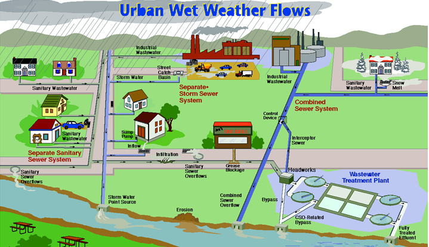
SWMM was first developed in 1971 and has undergone several major upgrades since then. It continues to be widely used throughout the world for planning, analysis and design related to storm water runoff, combined sewers, sanitary sewers, and other drainage systems in urban areas, with many applications in non-urban areas as well. The current edition, Version 5, is a complete re-write of the previous release. Running under Windows, SWMM 5 provides an integrated environment for editing study area input data, running hydrologic, hydraulic and water quality simulations, and viewing the results in a variety of formats. These include color-coded drainage area and conveyance system maps, time series graphs and tables, profile plots, and statistical frequency analyses.
Hydrologic Modeling Features
SWMM accounts for various hydrologic processes that produce runoff from urban areas. These include:
- time-varying rainfall
- evaporation of standing surface water
- snow accumulation and melting
- rainfall interception from depression storage
- infiltration of rainfall into unsaturated soil layers
- percolation of infiltrated water into groundwater layers
- interflow between groundwater and the drainage system
- nonlinear reservoir routing of overland flow
- capture and retention of rainfall/runoff with various types of low impact development (LID) practices.
Spatial variability in all of these processes is achieved by dividing a study area into a collection of smaller, homogeneous subcatchment areas, each containing its own fraction of pervious and impervious sub-areas. Overland flow can be routed between sub-areas, between subcatchments, or between entry points of a drainage system.
Hydraulic Modeling Features
SWMM also contains a flexible set of hydraulic modeling capabilities used to route runoff and external inflows through a drainage system network of pipes, channels, storage/treatment units and diversion structures. These include the ability to:
- handle networks of unlimited size
- use a wide variety of standard closed and open conduit shapes as well as natural channels
- model special elements such as storage/treatment units, curb and gutter inlets, flow dividers, pumps, weirs, and orifices
- apply external flows and water quality inputs from surface runoff, groundwater interflow, rainfall-dependent infiltration/inflow, dry weather sanitary flow, and user-defined inflows
- utilize either kinematic wave or full dynamic wave flow routing methods
- model various flow regimes, such as backwater, surcharging, reverse flow, and surface ponding
- apply user-defined dynamic control rules to simulate the operation of pumps, orifice openings, and weir crest levels.
Water Quality Modeling Features
In addition to modeling the generation and transport of runoff flows, SWMM can also estimate the production of pollutant loads associated with this runoff. The following processes can be modeled for any number of user-defined water quality constituents:
- dry-weather pollutant buildup over different land uses
- pollutant washoff from specific land uses during storm events
- direct contribution of rainfall deposition
- reduction in dry-weather buildup due to street cleaning
- reduction in washoff load due to BMPs
- entry of dry weather sanitary flows and user-specified external inflows at any point in the drainage system
- routing of water quality constituents through the drainage system
- reduction in constituent concentration through treatment in storage units or by natural processes in pipes and channels.
Typical Applications of SWMM
Since its inception, SWMM has been used in thousands of sewer and stormwater studies throughout the world. Typical applications include:
- design and sizing of drainage system components for flood control
- sizing of detention facilities and their appurtenances for flood control and water quality protection
- flood plain mapping of natural channel systems
- designing control strategies for minimizing combined sewer overflows
- evaluating the impact of inflow and infiltration on sanitary sewer overflows
- generating non-point source pollutant loadings for waste load allocation studies
- evaluating the effectiveness of BMPs for reducing wet weather pollutant loadings.
Steps in Using SWMM
One typically carries out the following steps when using EPA SWMM to model a study area:
- Specify a default set of options and object properties to use (see Setting Project Defaults).
- Draw a network representation of the physical components of the study area (see Adding Objects).
- Edit the properties of the objects that make up the system (see Editing Objects).
- Select a set of analysis options (see Setting Analysis Options).
- Run a simulation (see Initiating a Run).
- View the results of the simulation (see Viewing Results).
For larger systems it will be more convenient to replace Step 2 by collecting study area data from various sources, such as CAD drawings or GIS files, and transferring these data into a SWMM input file whose format is described in the SWMM 5 User's Manual.
What's New in Release 5.2.4
This is a maintenance release that addresses the following issues:
- Inconsistent reporting of Surface Runoff and Wet Weather Inflow pollutant mass in the Status Report.
- Missing limits on water flux rates between layers in several types of LID units.
- Incorrect geometry calculations for Street cross-sections with depressed gutters.
- Questionable behavior of conduit evaporation and seepage losses.
- Flickering of the Study Area Map when panning.
- Access Violation error when attempting to edit the vertices of a Storage Node polygon.
- Max/Full Depth values for orifices and weirs in the wrong column of the Summary Results Link Flow table.
- "Scrollbar property out of range" error for models with extremely long simulation periods.
Please consult the SWMM 5 Updates and Bug Fixes file for a complete listing of all program updates.
SWMM's Conceptual Model
SWMM conceptualizes a drainage system as a series of water and material flows between several major environmental compartments. These compartments and the SWMM objects they contain include:
- The Atmospheric compartment, which generates precipitation and deposits pollutants onto the land surface compartment. SWMM uses Rain Gage objects to represent rainfall inputs to the system.
- The Land Surface compartment, which is represented through one or more Subcatchment objects. It receives precipitation from the Atmospheric compartment in the form of rain or snow; it sends outflow in the form of infiltration to the Groundwater compartment and also as surface runoff and pollutant loadings to the Transport compartment.
- The Groundwater compartment receives infiltration from the Land Surface compartment and transfers a portion of this inflow to the Transport compartment. This compartment is modeled using Aquifer objects.
- The Transport compartment contains a network of conveyance elements (channels, pipes, pumps, and regulators) and storage/treatment units that transport water to outfalls or to treatment facilities. Inflows to this compartment can come from surface runoff, groundwater interflow, sanitary dry weather flow, or from user-defined hydrographs. The components of the Transport compartment are modeled with Node and Link objects.
Not all compartments need appear in a particular SWMM model. For example, one could model just the transport compartment, using pre-defined hydrographs as inputs.
Visual Objects
The figure below depicts how a collection of SWMM's visual objects might be arranged together to represent a stormwater drainage system. These objects can be displayed on a map in the SWMM workspace. Click on the name of any object to view its description.
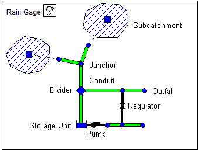
Rain Gages
Rain Gages supply precipitation data for one or more subcatchment areas in a study region. The rainfall data can be either a user-defined time series or come from an external file. Several different popular rainfall file formats currently in use are supported, as well as a standard user-defined format.
The principal input properties of rain gages include:
- rainfall data type (e.g., intensity, volume, or cumulative volume)
- recording time interval (e.g., hourly, 15-minute, etc.)
- source of rainfall data (input time series or external file)
- name of rainfall data source
See Also
Rain Gage Properties
Subcatchments
Subcatchments are hydrologic units of land whose topography and drainage system elements direct surface runoff to a single discharge point. The user is responsible for dividing a study area into an appropriate number of subcatchments, and for identifying the outlet point of each subcatchment. Discharge outlet points can be either nodes of the drainage system or other subcatchments.
Subcatchments are divided into pervious and impervious subareas. Surface runoff can infiltrate into the upper soil zone of the pervious subarea, but not through the impervious subarea. Impervious areas are themselves divided into two subareas - one that contains depression storage and another that does not. Runoff flow from one subarea in a subcatchment can be routed to the other subarea, or both subareas can drain to the subcatchment outlet.
Infiltration of rainfall from the pervious area of a subcatchment into the unsaturated upper soil zone can be described using five different models:
- Classic Horton infiltration
- Modified Horton infiltration
- Green-Ampt infiltration
- Modified Green-Ampt Infiltration
- SCS Curve Number infiltration
To model the accumulation, re-distribution, and melting of precipitation that falls as snow on a subcatchment, it must be assigned a Snow Pack object. To model groundwater flow between an aquifer underneath the subcatchment and a node of the drainage system, the subcatchment must be assigned a set of Groundwater parameters. Pollutant buildup and washoff from subcatchments are associated with the Land Uses assigned to the subcatchment. Capture and retention of rainfall/runoff using different types of low impact development practices (such as bio-retention cells, infiltration trenches, porous pavement, vegetative swales, and rain barrels) can be modeled by assigning a set of pre-designed LID controls to the subcatchment.
The other principal input parameters for subcatchments include:
- assigned rain gage
- outlet node or subcatchment
- total area
- percent impervious area
- average slope
- characteristic width of overland flow
- Manning's roughness (n) for overland flow on both pervious and impervious areas
- depression storage in both pervious and impervious areas
- percent of impervious area with no depression storage.
See Also
Subcatchment Properties
Nodes
Nodes are points of a conveyance system that connect conveyance links together. There are several different categories of nodes that can be employed:
Nodes are also the points where external inflows can enter a drainage system and where removal of pollutants through treatment can occur.
Junctions
Junctions are drainage system nodes where links join together. Physically they can represent the confluence of natural surface channels, manholes in a sewer system, or pipe connection fittings. External inflows can enter the system at junctions. Excess water at a junction can become partially pressurized while connecting conduits are surcharged and can either be lost from the system or be allowed to pond atop the junction and subsequently drain back into the junction.
The principal input parameters for a junction are:
- invert (channel or manhole bottom) elevation
- height to ground surface
- ponded surface area when flooded (optional)
- external inflow data (optional).
See Also
Junction Properties
Outfalls
Outfalls are terminal nodes of the drainage system used to define final downstream boundaries under Dynamic Wave flow routing. For other types of flow routing they behave as a junction. Only a single link can be connected to an outfall node, and the option exists to have the outfall discharge onto a subcatchment's surface.
The boundary conditions at an outfall can be described by any one of the following stage relationships:
- the critical or normal flow depth in the connecting conduit
- a fixed stage elevation
- a tidal stage described in a table of tide height versus hour of the day
- a user-defined time series of stage versus time.
The principal input parameters for outfalls include:
- invert elevation
- boundary condition type and stage description
- presence of a flap gate to prevent backflow through the outfall.
See Also
Outfall Properties
Flow Dividers
Flow Dividers are drainage system nodes that divert inflows to a specific conduit in a prescribed manner. A flow divider can have no more than two conduit links on its discharge side. Flow dividers are only active under Steady Flow and Kinematic Wave routing and are treated as simple junctions under Dynamic Wave routing.
There are four types of flow dividers, defined by the manner in which inflows are diverted:
- Cutoff (diverts all inflow above a defined cutoff value)
- Overflow (diverts all inflow above the flow capacity of the non-diverted conduit)
- Tabular (uses a table that expresses diverted flow as a function of total inflow)
- Weir (treats diverted flow as linearly proportional to the inflow above a defined cutoff value).
The principal input parameters for a flow divider are:
- junction parameters (see Junctions)
- name of the link receiving the diverted flow
- method used for computing the amount of diverted flow.
See Also
Divider Properties
Storage Units
Storage Units are drainage system nodes that provide storage volume. Physically they could represent storage facilities as small as a catch basin or as large as a lake. The volumetric properties of a storage unit are described by a function or table of surface area versus height. In addition to receiving inflows and discharging outflows to other nodes in the drainage network, storage nodes can also lose water from surface evaporation and from seepage into native soil.
The principal input parameters for storage units include:
- invert (bottom) elevation
- maximum depth
- depth-surface area data
- evaporation potential
- seepage parameters (optional)
- external inflow data (optional).
See Also
Storage Properties
Links
Links are the conveyence components of a drainage system and always lie between a pair of nodes.
Types of links include:
Conduits
Conduits are pipes or channels that move water from one node to another in the conveyance system. Their cross-sectional shapes can be selected from a variety of standard open and closed geometries. Irregular natural cross-section shapes are also supported, as are user-defined closed shapes.
The principal input parameters for conduits are:
- names of the inlet and outlet nodes
- offset height or elevation of the conduit above the inlet and outlet node inverts
- conduit length
- Manning's roughness (n)
- cross-sectional geometry
- entrance/exit losses (optional)
- seepage rate (optional)
- presence of a flap gate to prevent reverse flow (optional)
- culvert type code number if the conduit acts as a culvert (optional)
- name of any inlet structure placed in a street or channel conduit (optional)
Conduits designated as culverts are checked continuously during dynamic wave flow routing to see if they operate under Inlet Control as defined in the Federal Highway Administration's publication Hydraulic Design of Highway Culverts (Publication No. FHWA-NHI-01-020, May 2005).
Street and channel conduits with inlet structures use the methods described in the Federal Highway Administration's publication Urban Drainage Design Manual - HEC-22 (Publication No. FHWA-NHI-10-009, August 2013) to determine the amount of flow they capture.
See Also
Conduit Properties
Cross-Section Editor
Pumps
Pumps are links used to lift water to higher elevations. A pump curve describes the relation between a pump's flow rate and conditions at its inlet and outlet nodes. Five different types of pumps are supported:
| Type1 An off-line pump with a wet well where flow increases incrementally with available wet well volume. | 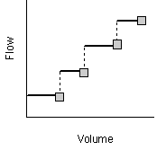 |
| Type2 An in-line pump where flow increases incrementally with inlet node depth. | 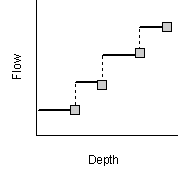 |
| Type3 An in-line pump where flow varies continuously with head difference between the inlet and outlet nodes. | 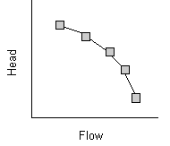 |
| Type4 A variable speed in-line pump where flow varies continuously with inlet node depth. | 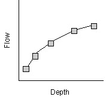 |
| Type5 A variable speed version of the Type3 pump where the head v. flow curve shifts position depending on the pump's speed setting. | 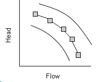 |
| Ideal An "ideal" transfer pump whose flow rate equals the inflow rate at its inlet node. No curve is required. The pump must be the only outflow link from its inlet node. Used mainly for preliminary design. |
The on/off status of pumps can be controlled dynamically by specifying startup and shutoff water depths at the inlet node or through user-defined Control Rules. Rules can also be used to simulate variable speed drives that modulate pump flow.
The principal input parameters for a pump include:
- names of the inlet and outlet nodes
- name of its pump curve (or * for an Ideal pump)
- initial on/off status
- startup and shutoff depths (optional).
See Also
Pump Properties
Flow Regulators
Flow Regulators are structures or devices used to control and divert flows within a conveyance system. They are typically used to:
- control releases from storage facilities
- prevent unacceptable surcharging
- divert flow to treatment facilities and interceptors.
SWMM can model the following types of flow regulators:
Orifices
Orifices are used to model outlet and diversion structures in drainage systems which are typically openings in the wall of a manhole, storage facility, or control gate. They are internally represented in SWMM as a link connecting two nodes. An orifice can have either a circular or rectangular shape, be located either at the bottom or along the side of the upstream node, and have a flap gate to prevent backflow.
Orifices can be used as storage unit outlets under all types of flow routing. If not attached to a storage unit node, they can only be used in drainage networks that are analyzed with Dynamic Wave flow routing.
The flow through an orifice is computed based on the area of its opening, its discharge coefficient, and the head difference across the orifice.
The height of an orifice's opening can be controlled dynamically through user-defined Control Rules. This feature can be used to model gate openings and closings.
The principal input parameters for an orifice include:
- names of its inlet and outlet nodes
- configuration (bottom or side)
- shape (circular or rectangular)
- height above the inlet node invert
- discharge coefficient
- time to open or close (optional).
See Also
Orifice Properties
Weirs
Weirs, like orifices, are used to model outlet and diversion structures in a drainage system. Weirs are typically located in a manhole, along the side of a channel, or within a storage unit. They are internally represented in SWMM as a link connecting two nodes, where the weir itself is placed at the upstream node. A flap gate can be included to prevent backflow.
Five varieties of weirs are available, each incorporating a different formula for computing flow as a function of area, discharge coefficient and head difference across the weir:
- Transverse (rectangular shape)
- Side flow (rectangular shape)
- V-notch (triangular shape)
- Trapezoidal (trapezoidal shape)
- Roadway (broad crested rectangular weir used to model roadway crossings).
Weirs can be used as storage unit outlets under all types of flow routing. If not attached to a storage unit, they can only be used in drainage networks that are analyzed with [Dynamic Wave](dynamic_wave) flow routing.
The height of the weir crest above the inlet node invert can be controlled dynamically through user-defined [Control Rules](control_rules). This feature can be used to model inflatable dams.
Weirs can either be allowed to surcharge or not. A surcharged weir will use an equivalent orifice equation to compute the flow through it. Weirs placed in open channels would normally not be allowed to surcharge while those placed in closed diversion structures or those used to represent storm drain inlet openings would be allowed to.
The principal input parameters for a weir include:
- names of its inlet and outlet nodes
- shape and geometry
- crest height above the inlet node invert
- discharge coefficient.
See Also
Weir Properties
Outlets
Outlets are flow control devices that are typically used to control outflows from storage units. They are used to model special head-discharge relationships that cannot be characterized by pumps, orifices, or weirs. Outlets are internally represented in SWMM as a link connecting two nodes. An outlet can also have a flap gate that restricts flow to only one direction.
Outlets attached to storage units are active under all types of flow routing. If not attached to a storage unit, they can only be used in drainage networks analyzed with Dynamic Wave flow routing.
A user-defined rating curve determines an outlet's discharge flow as a function of either the freeboard depth above the outlet's opening or the head difference across it. Control Rules can be used to dynamically adjust this flow when certain conditions exist.
The principal input parameters for an outlet include:
- names of its inlet and outlet nodes
- height above the inlet node invert
- function or table containing its head (or depth) - discharge relationship.
See Also
Outlet Properties
Map Labels
Map Labels are optional text labels added to SWMM's Study Area Map to help identify particular objects or regions of the map. The labels can be drawn in any Windows font, freely edited and be dragged to any position on the map.
See Also
Map Label Properties
Non-visual Objects
In addition to physical objects that can be displayed visually on a map, SWMM utilizes several classes of non-visual data objects to describe additional characteristics and processes within a study area.
Climatology
The Climatology object in EPA SWMM describes the following climate-related variables used for computing runoff and snowmelt:
Temperature
Air temperature data are used when simulating snowfall and snowmelt processes during runoff calculations. They are also needed if the option to base evaporation rates on temperature is selected. If these processes are not being simulated then temperature data are not required. Air temperature data can be supplied to SWMM from one of the following sources:
- a user-defined time series of point values (values at intermediate times are interpolated)
- an external climate file containing daily minimum and maximum values (SWMM fits a sinusoidal curve through these values depending on the day of the year).
For user-defined time series, temperatures are in degrees F for US units and degrees C for metric units. The external climate file can also be used to supply evaporation and wind speed as well.
See Also
Evaporation
Evaporation can occur for standing water on subcatchment surfaces, for subsurface water in groundwater aquifers, for water traveling through open channels, and for water held in storage units. Evaporation rates can be stated as:
- a single constant value
- a set of monthly average values
- a user-defined time series of values
- values computed from the daily temperatures contained in an external climate file
- daily values read from an external climate file.
These values represent potential rates. The actual amount of water evaporated will depend on the amount available.
If rates are read directly from a climate file, then a set of monthly pan coefficients should also be supplied to convert the pan evaporation data to free water-surface values. An option is also available to allow evaporation only during periods with no precipitation.
See Also
Wind Speed
Wind speed is an optional climatic variable that is only used for snowmelt calculations. SWMM can use either a set of monthly average speeds or wind speed data contained in the same climate file used for daily minimum/maximum temperatures.
See Also
Snowmelt
Snowmelt parameters are climatic variables that apply across the entire study area when simulating snowfall and snowmelt. They include:
- the air temperature at which precipitation falls as snow
- heat exchange properties of the snow surface
- study area elevation, latitude, and longitude correction.
See Also
Areal Depletion
Areal depletion refers to the tendency of accumulated snow to melt non-uniformly over the surface of a subcatchment. As the melting process proceeds, the area covered by snow gets reduced. This behavior is described by an Areal Depletion Curve that plots the fraction of total area that remains snow covered against the ratio of the actual snow depth to the depth at which there is 100% snow cover. A typical ADC for a natural area is shown below.
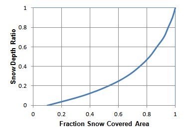
Two such curves can be supplied to SWMM, one for impervious areas and another for pervious areas.
See Also
Climate Adjustments
Climate adjustments are optional modifications applied to the temperature, evaporation rate, and rainfall intensity that SWMM would otherwise use at each time step of a simulation. Separate sets of adjustments that vary periodically by month of the year can be assigned to these variables. They provide a simple way to examine the effects of future climate change without having to modify the original climatic time series.
In a similar manner, a set of monthly adjustments can be applied to the hydraulic conductivity used in computing rainfall infiltration on all pervious land surfaces, including those in all LID units, and exfiltration from all storage nodes and conduits. These can reflect the increase of hydraulic conductivity with increasing temperature or the effect that seasonal changes in land surface conditions, such as frozen ground, can have on infiltration capacity. They can be overridden for individual subcatchments (and their LID units) by assigning a monthly infiltration adjustment Time Pattern to a subcatchment. Monthly adjustment time patterns for depression storage and pervious surface roughness coefficient (Mannings n) can also be specified for individual subcatchments (see Subcatchment Properties).
Hydrology
Aside from rain gages and subcatchments, the following hydrology-related objects are used by SWMM:
Snow Packs
Snow Pack objects contain parameters that characterize the buildup, removal, and melting of snow over three types of sub-areas within a subcatchment:
- The Plowable snow pack area consists of a user-defined fraction of the total impervious area. It is meant to represent such areas as streets and parking lots where plowing and snow removal can be done.
- The Impervious snow pack area covers the remaining impervious area of a subcatchment.
- The Pervious snow pack area encompasses the entire pervious area of a subcatchment.
Each of these three areas is characterized by the following parameters:
- minimum and maximum snow melt coefficients
- minimum air temperature for snow melt to occur
- snow depth above which 100% areal coverage occurs
- initial snow depth
- initial and maximum free water content in the pack.
In addition, a set of snow removal parameters can be assigned to the Plowable area. These parameters consist of the depth at which snow removal begins and the fractions of snow moved onto various other areas.
Subcatchments are assigned a snow pack object through their Snow Pack property. A single snow pack object can be applied to any number of subcatchments. Assigning a snow pack to a subcatchment simply establishes the melt parameters and initial snow conditions for that subcatchment. Internally, SWMM creates a "physical" snow pack for each subcatchment, which tracks snow accumulation and melting for that particular subcatchment based on its snow pack parameters, its amount of pervious and impervious area, and the precipitation history it sees.
See Also
Aquifers
Aquifers are sub-surface groundwater zones used to model the vertical movement of water infiltrating from the subcatchments that lie above them. They also permit the infiltration of groundwater into the drainage system, or exfiltration of surface water from the drainage system, depending on the hydraulic gradient that exists. Aquifers are only required in models that need to explicitly account for the exchange of groundwater with the drainage system or to establish baseflow and recession curves in natural channels and non-urban systems.
The parameters of an aquifer object can be shared by several subcatchments but there is no exchange of groundwater between subcatchments. A drainage system node can exchange groundwater with more than one subcatchment.
Aquifers are represented using two zones – an un-saturated zone and a saturated zone. Their behavior is characterized using such parameters as soil porosity, hydraulic conductivity, evapotranspiration depth, bottom elevation, and loss rate to deep groundwater. In addition, the initial water table elevation and initial moisture content of the unsaturated zone must be supplied.
Aquifers are connected to subcatchments and to drainage system nodes as defined in a subcatchment's Groundwater Flow property. This property also contains parameters that govern the rate of groundwater flow between the aquifer's saturated zone and the drainage system node.
See Also
Unit Hydrographs
Unit Hydrographs (UHs) estimate rainfall-dependent inflow/infiltration (RDII) into a sewer system. A UH set contains up to three such hydrographs, one for a short-term response, one for an intermediate-term response, and one for a long-term response. A UH group can have up to 12 UH sets, one for each month of the year. Each UH group is considered as a separate object by SWMM, and is assigned its own unique name along with the name of the rain gage that supplies rainfall data to it.
Each unit hydrograph is defined by three parameters:
- R: the fraction of rainfall volume that enters the sewer system
- T: the time from the onset of rainfall to the peak of the UH in hours
- K: the ratio of time to recession of the UH to the time to peak
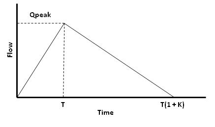
A unit hydrograph can also have a set of Initial Abstraction (IA) parameters associated with it. These determine how much rainfall is lost to interception and depression storage before any excess rainfall is generated and transformed into RDII flow by the hydrograph.
To generate RDII into a drainage system node, the node must identify (through its Inflows property) the UH group and the area of the surrounding sewershed that contributes RDII flow.
[!tip] An alternative to using unit hydrographs to define RDII flow is to create an external RDII interface file, which contains RDII time series data.
[!tip] Unit hydrographs could also be used to replace SWMM's main rainfall-runoff process that uses Subcatchment objects, provided that properly calibrated UHs are utilized. In this case what SWMM calls RDII inflow to a node would actually represent overland runoff.
See Also
Inflows
RDII Inflow Editor
LID Controls
LID Controls are low impact development practices designed to capture surface runoff and provide some combination of detention, infiltration, and evapotranspiration to it. They are considered as properties of a given subcatchment, similar to how Aquifers and Snow Packs are treated. SWMM can explicitly model the following generic types of LID controls:
| Bio-retention Cells are depressions that contain vegetation grown in an engineered soil mixture placed above a gravel drainage bed. They provide storage, infiltration and evaporation of both direct rainfall and runoff captured from surrounding areas. |
| Rain Gardens are a type of bio-retention cell consisting of just the engineered soil layer with no gravel bed below it. |
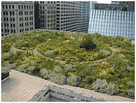 | Green Roofs are another variation of a bio-retention cell that have a soil layer laying atop a special drainage mat material that conveys excess percolated rainfall off of the roof. |
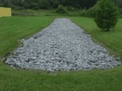 | Infiltration Trenches are narrow ditches filled with gravel that intercept runoff from upslope impervious areas. They provide storage volume and additional time for captured runoff to infiltrate the native soil below. |
| Continuous Permeable Pavement systems are excavated areas filled with gravel and paved over with a porous concrete or asphalt mix. Block Paver systems consist of impervious paver blocks placed on a sand or pea gravel bed with a gravel storage layer below |
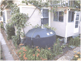 | Rain Barrels (or Cisterns) are containers that collect roof runoff during storm events and can either release or re-use the rainwater during dry periods. |
| Rooftop Disconnection has downspouts discharge to pervious landscaped areas and lawns instead of directly into storm drains. It can also model roofs with directly connected drains that overflow onto pervious areas. |
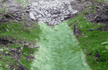 | Vegetative Swales are channels or depressed areas with sloping sides covered with grass and other vegetation. They slow down the conveyance of collected runoff and allow it more time to infiltrate the native soil beneath it. |
Bio-retention cells, infiltration trenches, and permeable pavement systems can contain optional drain systems in their gravel storage beds to convey excess captured runoff off of the site and prevent the unit from flooding. They can also have an impermeable floor or liner that prevents any infiltration into the native soil from occurring. Infiltration trenches and permeable pavement systems can also be subjected to a decrease in hydraulic conductivity over time due to clogging.
LID units that contain drains can have a removal percentage assigned to each pollutant discharged through the drain. LID's will also provide a reduction in pollutant mass load conveyed in their surface discharge due to the reduction in runoff flow volume they provide.
For more details on using LID controls within SWMM see the rollowing topics:
LID Representation
LID controls are represented by a combination of vertical layers whose properties are defined on a per-unit-area basis. This allows LIDs of the same design but differing areal coverage to easily be placed within different subcatchments in a study area.
During a simulation SWMM performs a moisture balance that keeps track of how much water moves between and is stored within each LID layer. As an example, the layers used to model a bio-retention cell and the flow pathways between them are shown below:
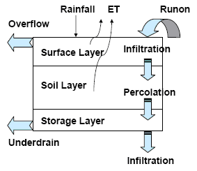
The following table indicates which combination of layers applies to each type of LID (x means required, o means optional):
| LID Type | Surface | Pavement | Soil | Storage | Drain | Drain Mat |
|---|---|---|---|---|---|---|
| Bio-Retention Cell | x | x | x | o | ||
| Rain Garden | x | x | ||||
| Green Roof | x | x | x | |||
| Infiltration Trench | x | x | o | |||
| Permeable Pavement | x | x | o | x | o | |
| Rain Barrel | x | x | ||||
| Rooftop Disconnection | x | x | ||||
| Vegetative Swale | x |
When a user adds a specific type of LID control object to a SWMM project the LID Control Editor is used to set the design properties of each relevant layer (such as thickness, void volume, hydraulic conductivity, drain characteristics, etc.). These LID objects can then be placed within selected subcatchments at any desired sizing (or areal coverage) by editing the subcatchment's LID Controls property.
LID Utilization
Utilizing LID controls within a SWMM project is a two phase process that:
- creates a set of scale-independent LID controls that can be deployed throughout the study area,
- assigns any desired mix and sizing of these controls to selected subcatchments.
Bear in mind that when LIDs are added to a subcatchment, the subcatchment's Area property is the total area of the subcatchment (both non-LID and LID portions) while the Percent Imperviousness and Width parameters apply only to the non-LID portion of the subcatchment.
To implement the first phase, one selects the Hydrology | LID Controls category from the Project Browser to add, edit or delete individual LID control objects. The LID Control Editor is used to edit the properties of the various component layers that comprise each LID control object.
For the second phase, for each subcatchment that will utilize LIDs, one selects the LID Controls property in the subcatchment's Property Editor to launch the LID Group Editor. This editor is used to add or delete individual LID controls from the subcatchment. For each control added the LID Usage Editor is used to specify the size of the control and what fraction of the subcatchment's impervious and pervious areas it captures.
LID Placement
There are two different approaches for placing LID controls within a subcatchment:
- place one or more controls in an existing subcatchment that will displace an equal amount of non-LID area from the subcatchment
- create a new subcatchment devoted entirely to just a single LID practice.
The first approach allows a mix of LIDs to be placed into a subcatchment, each treating a different portion of the runoff generated from the non-LID fraction of the subcatchment. Note that under this option the subcatchment's LIDs act in parallel – it is not possible to make them act in series (i.e., have the outflow from one LID control become the inflow to another LID). Also, after LID placement the subcatchment's Percent Impervious and Width properties may require adjustment to compensate for the amount of original subcatchment area that has now been replaced by LIDs (see the figure below). For example, suppose that a subcatchment which is 40% impervious has 75% of that area converted to permeable pavement. After the LID is added the subcatchment's percent imperviousness should be changed to the percent of impervious area remaining divided by the percent of non-LID area remaining. This works out to \( (1 - 0.75)*40 / (100 - 0.75*40) \) or 14.3 %.
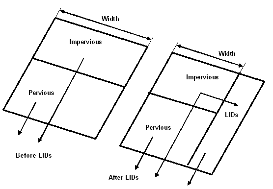
Under this first approach the runoff available for capture by the subcatchment's LIDs is the runoff generated from its non-LID area (after any internal re-routing of runoff (e.g., impervious to pervious) has been made). Also note that Green Roofs and Roof Disconnection only treat the precipitation that falls directly on them and do not capture runoff from other impervious areas in their subcatchment.
The second approach allows LID controls to be strung along in series and also allows runoff from several different upstream subcatchments to be routed onto the LID subcatchment. If these single-LID subcatchments are carved out of existing subcatchments, then once again some adjustment of the Percent Impervious, Width and also the Area properties of the latter may be necessary. In addition, whenever an LID occupies the entire subcatchment the values assigned to the subcatchment's standard surface properties (such as imperviousness, slope, roughness, etc.) are overridden by those that pertain to the LID unit.
Normally both surface and drain outflows from LID units are routed to the same outlet location assigned to the parent subcatchment. However one can choose to return all LID outflow to the pervious area of the parent subcatchment and/or route the drain outflow to a separate designated outlet. (When both of these options are chosen, only the surface outflow is returned to the pervious sub-area.)
LID Results
The performance of the LID controls placed in a subcatchment is reflected in the overall runoff, infiltration, and evaporation rates computed for the subcatchment as normally reported by SWMM. SWMM's Summary Report also contains a section entitled LID Performance Summary that provides an overall water balance for each LID control placed in each subcatchment. The components of this water balance include total inflow, infiltration, evaporation, surface runoff, drain flow and initial and final stored volumes, all expressed as inches (or mm) over the LID's area.
Optionally, the entire time series of flux rates and moisture levels for a selected LID control in a given subcatchment can be written to a tab delimited text file for easy viewing and graphing in a spreadsheet program.
Hydraulics
In addition to the nodes and links which characterize the physical aspects of a drainage system in a SWMM model, the following data objects can be used to augment the hydraulic description of the system:
Transects
Transects refer to the geometric data that describe how bottom elevation varies with horizontal distance over the cross-section of a natural channel or irregular-shaped conduit. The figure below displays an example of a transect for a natural channel.
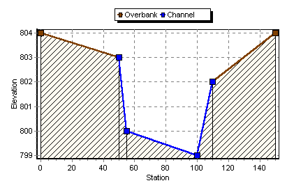
Each transect must be given a unique name. Conduits refer to that name to represent their shape. A special Transect Editor is available for editing the station-elevation data of a transect. SWMM internally converts these data into tables of area, top width, and hydraulic radius versus channel depth. In addition, as shown in the diagram above, each transect can have a left and right overbank section whose Manning's roughness coefficient can be different from that of the main channel. This feature can provide more realistic estimates of channel conveyance under high flow conditions.
Streets
Streets are a specialized form of transect that describes the typical cross-section geometry of a street or roadway. The figure below shows a half-street layout along with the dimensions a user needs to provide.

Each street section object is assigned an ID name that a conduit can refer to for describing its cross section geometry. A Street Section Editor is available for providing a street section's dimensions and whether it is one- or two-sided.
Inlets
Street inlets are curb and gutter openings that convey runoff from streets into below-ground sewers. Drop inlets serve a similar purpose for trapezoidal channels. SWMM can compute the amount of flow captured by inlets and sent to designated sewer nodes using the FHWA HEC-22 methodology. The type, sizing, and spacing of street inlets will determine if the spread and depth of water on roadways can be maintained at acceptable levels.
To analyze street drainage with SWMM a site is represented as a dual drainage system consisting of both street conduits along the ground surface and sewer conduits below it. An inlet structure will divert some portion of the street flow it sees into a designated node of the sewer system with the rest being bypassed to downstream streets. When an inlet's sewer node reaches its full depth any excess flow that would cause it to flood is sent back through the inlet and into the street.
Inlet Types
SWMM’s HEC-22 inlet capture equations support the inlet types shown below:
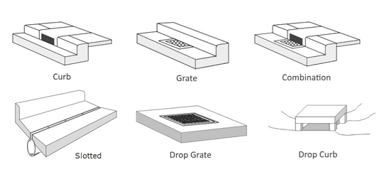
Drop inlets can only be used with rectangular or trapezoidal channels while the other curb and gutter inlets can only be placed in conduits with Street cross-sections. An additional Custom type of inlet can be used in both streets and channels. Its capture efficiency is described by either a user-supplied Diversion curve (captured flow v. approach flow) or Rating curve (captured flow v. flow depth).
Inlet Usage
To add an analysis of street inlets to a SWMM project:
- Create one network layout for streets and another for sewers.
- Create a collection of street cross section objects.
- For each street conduit, set its Shape property to one of the available street sections.
- Create a set of inlet structure design objects.
- Place a particular inlet structure design into a selected street conduit, assigning it a sewer node that receives its captured flow.
- Assign surface runoff from subcatchments or other external inflows to street conduit nodes.
A similar set of steps would be used to add drop inlets into rectangular or trapezoidal channels.
A summary of results for each street conduit (maximum flow depth and pavement spread) and for each inlet (percent capture at peak flow, frequency of bypass flow and frequency of sewer system backflow) will appear as a separate Street Flow table in SWMM's Summary Results report.
Inlet Features
Some additional considerations when modeling inlets are:
- Conduits with inlets will be displayed on the Study Area Map with a
 symbol near their midpoint and show their downstream node connected to the inlet's capture node with a dotted line when the Map Option to display link symbols is turned on.
symbol near their midpoint and show their downstream node connected to the inlet's capture node with a dotted line when the Map Option to display link symbols is turned on.

- The rim elevations of nodes that receive captured inlet flow do not have to match the invert elevations of the end node of the conduit containing the inlet.
- Two-sided street conduits (that are symmetric about the street crown) use pairs of inlets placed on each curb side of the street.
- Multiple inlets of the same design can be assigned to a conduit (as pairs for two-sided streets). For on-grade placement the flow captured by each inlet is determined sequentially, so that the approach flow to the next inlet in line is the bypass flow from the inlet before it.
- Flow captured by inlets is limited by the amount that its sewer node can receive before it floods. If the node has no such capacity remaining then any excess flow that would cause it to flood is sent back through the inlet and onto the street.
- Users can stipulate whether an inlet operates on-grade or on-sag or have SWMM decide based on the slopes of the conduits adjoining it. (On-sag refers to a sump or low point that all adjoining conduits slope towards.)
- Inlets can have a degree of clogging and a flow capture restriction assigned to them.
- For Kinematic Wave and Steady Flow routing it is recommended that storage nodes be used at the end of inlet conduits that converge at sag points since otherwise any non-captured flow will simply exit the system. This is not necessary for Dynamic Wave routing as any non-captured water will create a backwater effect raising water levels in the adjoining street conduits.
External Inflows
In addition to inflows originating from subcatchment runoff and groundwater, drainage system nodes can receive three other types of external inflows:
Direct Inflows
These are user-defined time series of inflows added directly into a node. They can be used to perform flow and water quality routing in the absence of any runoff computations (as in a study area where no subcatchments are defined).
Dry Weather Inflows
These are continuous inflows that typically reflect the contribution from sanitary sewage in sewer systems or base flows in pipes and stream channels. They are represented by an average inflow rate that can be periodically adjusted on a monthly, daily, and hourly basis by applying Time Pattern multipliers to this average value.
Rainfall-Dependent Inflow/Infiltration (RDII)
These are stormwater flows that enter sanitary or combined sewers due to-"inflow" from direct connections of downspouts, sump pumps, foundation drains, etc. as well as "infiltration" of subsurface water through cracked pipes, leaky joints, poor manhole connections, etc. RDII can be computed for a given rainfall record based on set of triangular unit hydrographs (UH) that determine a short-term, intermediate-term, and long-term inflow response for each time period of rainfall. Any number of UH sets can be supplied for different sewershed areas and different months of the year. RDII flows can also be specified in an external RDII Interface file.
Direct, Dry Weather, and RDII inflows are properties associated with each type of drainage system node (junctions, outfalls, flow dividers, and storage units) and can be specified when nodes are edited. They can be used to perform flow and water quality routing in the absence of any runoff computations (as in a study area where no subcatchments are defined). It is also possible to make the outflows generated from an upstream drainage system be the inflows to a downstream system by using interface files.
See Also
External Inflows Editor
Control Rules
Control Rules determine how pumps and regulators in the conveyance system will be adjusted over the course of a simulation. The use of control rules is explained in the following topics:
- Example Rules
- Rule Format
- Condition Clauses
- Action Clauses
- Modulated Controls
- Named Variables
- Arithmetic Expressions
Example Rules
The following are some example control rules.
; Simple time-based pump control RULE R1 IF SIMULATION TIME > 8 THEN PUMP 12 STATUS = ON ELSE PUMP 12 STATUS = OFF ; Multi-condition orifice gate control RULE R2A IF NODE 23 DEPTH > 12 AND LINK 165 FLOW > 100 THEN ORIFICE R55 SETTING = 0.5 RULE R2B IF NODE 23 DEPTH > 12 AND LINK 165 FLOW > 200 THEN ORIFICE R55 SETTING = 1.0 RULE R2C IF NODE 23 DEPTH <= 12 OR LINK 165 FLOW <= 100 THEN ORIFICE R55 SETTING = 0 ; Pump station operation RULE R3A IF NODE N1 DEPTH > 5 THEN PUMP N1A STATUS = ON RULE R3B IF NODE N1 DEPTH > 7 THEN PUMP N1B STATUS = ON RULE R3C IF NODE N1 DEPTH <= 3 THEN PUMP N1A STATUS = OFF AND PUMP N1B STATUS = OFF ; Modulated weir height control RULE R4 IF NODE N2 DEPTH >= 0 THEN WEIR W25 SETTING = CURVE C25
Rule Format
Each control rule is a series of statements of the form:
RULE ruleID
IF condition_1
AND condition_2
OR condition_3
AND condition_4
Etc.
THEN action_1
AND action_2
Etc.
ELSE action_3
AND action_4
Etc.
PRIORITY value
where keywords are shown in boldface and ruleID is an ID label assigned to the rule, condition_n is a Condition Clause, action_n is an Action Clause, and value is a priority value (e.g., a number from 1 to 5).
Each rule clause must begin with one of the boldface keywords shown above, and only one clause per line is allowed.
Only the RULE, IF and THEN portions of a rule are required; the ELSE and PRIORITY portions are optional.
Blank lines between clauses are permitted and any text to the right of a semicolon is considered a comment.
When mixing AND and OR clauses, the OR operator has higher precedence than AND, i.e.,
IF A or B and C
is equivalent to
IF (A or B) and C.
If the interpretation was meant to be
IF A or (B and C)
then this can be expressed using two rules as in
IF A THEN ... IF B and C THEN ...
The PRIORITY value is used to determine which rule applies when two or more rules require that conflicting actions be taken on a link. A conflicting rule with a higher priority value has precedence over one with a lower value (e.g., PRIORITY 5 outranks PRIORITY 1). A rule without a priority value always has a lower priority than one with a value. For two rules with the same priority value, the rule that appears first is given the higher priority.
Condition Clauses
A Condition Clause of a control rule has the following formats:
object id attribute relation value object id attribute relation object id attribute
where:
object – is a category of object
id – is the object's ID name
attribute – is an attribute or property of the object
relation – is a relational operator (=, <>, <, <=, >, >=)
value – is an attribute value
Some examples of condition clauses are:
GAGE G1 6-HR_DEPTH > 0.5 NODE N23 DEPTH > 10 NODE N23 DEPTH > NODE N25 DEPTH PUMP P45 STATUS = OFF SIMULATION CLOCKTIME = 22:45:00
The objects and attributes that can appear in a condition clause are as follows:
| Object | Attributes | Value |
|---|---|---|
GAGE | INTENSITY n-HR_DEPTH | numerical value |
NODE | DEPTH MAXDEPTH HEAD VOLUME INFLOW | numerical value |
LINK or CONDUIT | FLOW FULLFLOW DEPTH MAXDEPTH VELOCITY LENGTH SLOPE | numerical value |
STATUS | OPEN or CLOSED | |
TIMEOPEN TIMECLOSED | decimal hours or hr:min | |
PUMP | STATUS | ON or OFF |
SETTING | pump curve multiplier | |
FLOW | numerical value | |
ORIFICE | SETTING | fraction open |
WEIR | SETTING | fraction open |
OUTLET | SETTING | rating curve multiplier |
SIMULATION | TIME | elapsed time in decimal hours or hr:min:sec |
DATE | month/day/year | |
MONTH | month of year (January = 1) | |
DAY | day of week (Sunday = 1) | |
CLOCKTIME | time of day in hr:min:sec |
Gage INTENSITY is the rainfall intensity for a specific rain gage in the current simulation time period. Gage n-HR_DEPTH is a gage's total rainfall depth over the past n hours where n is a number between 1 and 48.
TIMEOPEN is the duration a link has been in an OPEN or ON state or have its SETTING be greater than zero; TIMECLOSED is the duration it has remained in a CLOSED or OFF state or have its SETTING be zero.
Action Clauses
An Action Clause of a control rule can have one of the following formats:
PUMP id STATUS = ON/OFF CONDUIT id STATUS = OPEN/CLOSED PUMP/ORIFICE/WEIR/OUTLET id SETTING = value
where the meaning of SETTING depends on the object being controlled:
- for Pumps it is a multiplier applied to the flow computed from the pump curve (for a TYPE5 pump curve it is a relative speed setting that shifts the curve up or down),
- for Orifices it is the fractional amount that the orifice is fully open,
- for Weirs it is the fractional amount of the original freeboard that exists (i.e., weir control is accomplished by moving the crest height up or down),
- for Outlets it is a multiplier applied to the flow computed from the outlet's rating curve.
Some examples of action clauses are:
PUMP P67 STATUS = OFF ORIFICE O212 SETTING = 0.5
Modulated Controls
Modulated controls are control rules that provide for a continuous degree of control applied to a pump or flow regulator as determined by the value of some controller variable, such as water depth at a node, or by time. The functional relation between the control setting and the controller variable can be specified by using a Control Curve, a Time Series, or a PID Controller. Some examples of modulated control rules are:
RULE MC1 IF NODE N2 DEPTH >= 0 THEN WEIR W25 SETTING = CURVE C25 RULE MC2 IF SIMULATION TIME > 0 THEN PUMP P12 SETTING = TIMESERIES TS101 RULE MC3 IF LINK L33 FLOW <> 1.6 THEN ORIFICE O12 SETTING = PID 0.1 0.0 0.0
Note how a modified form of the action clause is used to specify the name of the control curve, time series or PID parameter set that defines the degree of control. A PID parameter set contains three values – a proportional gain coefficient, an integral time (in minutes), and a derivative time (in minutes). Also, by convention the controller variable used in a Control Curve or PID Controller will always be the object and attribute named in the last condition clause of the rule. As an example, in rule MC1 above Curve C25 would define how the fractional setting at Weir W25 varied with the water depth at Node N2. In rule MC3, the PID controller adjusts the opening of Orifice O12 to maintain a flow of 1.6 in Link L33.
PID Controllers
A PID (Proportional-Integral-Derivative) Controller is a generic closed-loop control scheme that tries to maintain a desired set-point on some process variable by computing and applying a corrective action that adjusts the process accordingly. In the context of a hydraulic conveyance system a PID controller might be used to adjust the opening on a gated orifice to maintain a target flow rate in a specific conduit or to adjust a variable speed pump to maintain a desired depth in a storage unit. The classical PID controller has the form:
\[ m(t) = K{p} \left[ e(t)+\frac{1}{T{i}} \int e(\tau) d\tau +T{d} \frac{de(t)}{dt} \right] \]
where
| \(m(t)\) | = controller output |
| \(Kp\) | = proportional coefficient (gain) |
| \(Ti\) | = integral time |
| \(Td\) | = derivative time |
| \(e(t)\) | = error (difference between setpoint and observed variable value) |
| \(t\) | = time. |
The controller output \(m(t)\) has the same meaning as a link setting used in a rule's Action Clause while \(dt\) is the current flow routing time step in minutes. Because link settings are relative values (with respect to either a pump's standard operating curve or to the full opening height of an orifice or weir) the error \(e(t)\) used by the controller is also a relative value. It is defined as the difference between the control variable setpoint \(x^\star\) and its value at time \(t\), \(x(t)\), normalized to the setpoint value:
\[e(t) = (x^{\star} - x(t)) / x^{\star}\]
Note that for direct action control, where an increase in the link setting causes an increase in the controlled variable, the sign of \(Kp\) must be positive. For reverse action control, where the controlled variable decreases as the link setting increases, the sign of \(Kp\) must be negative. The user must recognize whether the control is direct or reverse action and use the proper sign on \(Kp\) accordingly. For example, adjusting an orifice opening to maintain a desired downstream flow is direct action. Adjusting it to maintain an upstream water level is reverse action. Controlling a pump to maintain a fixed wet well water level would be reverse action while using it to maintain a fixed downstream flow is direct action.
Named Variables
Named Variables are aliases used to represent the triplet of <object type | object id | object attribute> (or a doublet for Simulation times) that appear in the condition clauses of control rules. They allow condition clauses to be written as:
variable relation value variable relation variable
where variable is defined on a separate line before its first use in a rule using the format:
VARIABLE name = object id attribute
Here is an example of using this feature:
VARIABLE N123_Depth = NODE N123 DEPTH VARIABLE N456_Depth = NODE N456 DEPTH VARIABLE P45 = PUMP 45 STATUS RULE 1 IF N123_Depth > N456_Depth AND P45 = OFF THEN PUMP 45 STATUS = ON RULE 2 IF N123_Depth < 1 THEN PUMP 45 STATUS = OFF
A variable is not allowed to have the same name as an object attribute.
Aside from saving some typing, named variables are required when using arithmetic expressions in rule condition clauses.
Arithmetic Expressions
In addition to a simple condition placed on a single variable, a control condition clause can also contain an arithmetic expression formed from several variables whose value is compared against. Thus the format of a condition clause can be extended as follows:
expression relation value expression relation variable
where expression is defined on a separate line before its first use in a rule using the format:
EXPRESSION name = f(variable1, variable2, ...)
The function f(...) can be any well-formed mathematical expression containing one or more named variables as well as any of the following math functions (which are case insensitive) and operators:
- abs(x) for absolute value of x
- sgn(x) which is +1 for x >= 0 or -1 otherwise
- step(x) which is 0 for x <= 0 and 1 otherwise
- sqrt(x) for the square root of x
- log(x) for logarithm base e of x
- log10(x) for logarithm base 10 of x
- exp(x) for e raised to the x power
- the standard trig functions (sin, cos, tan, and cot)
- the inverse trig functions (asin, acos, atan, and acot)
- the hyperbolic trig functions (sinh, cosh, tanh, and coth)
- the standard operators +, -, *, /, ^ (for exponentiation ) and any level of nested parentheses.
Here is an example of using this feature:
VARIABLE P1_flow = LINK 1 FLOW VARIABLE P2_flow = LINK 2 FLOW VARIABLE O3_flow = Link 3 FLOW EXPRESSION Net_Inflow = (P1_flow + P2_flow)/2 - O3_flow RULE 1 IF Net_Inflow > 0.1 THEN ORIFICE 3 SETTING = 1 ELSE ORIFICE 3 SETTING = 0.5
Water Quality
Water quality related data are supplied to a SWMM model using the following types of objects:
Pollutants
SWMM can simulate the generation, inflow and transport of any number of user-defined pollutants. Required information for each pollutant includes:
- pollutant name
- concentration units (i.e., milligrams/liter, micrograms/liter, or counts/liter)
- concentration in rainfall
- concentration in groundwater
- concentration in inflow/infiltration
- concentration in dry weather flow
- initial concentration throughout the conveyance system
- first-order decay coefficient.
Co-pollutants can also be defined in SWMM. For example, pollutant X can have a co-pollutant Y, meaning that the runoff concentration of X will have some fixed fraction of the runoff concentration of Y added to it.
Pollutant buildup and washoff from subcatchment areas are determined by the land uses assigned to those areas. Input loadings of pollutants to the drainage system can also originate from external time series inflows as well as from dry weather inflows.
See Also
External Inflows Editor
Land Uses
Land Uses are categories of development activities or land surface characteristics assigned to subcatchments. Examples of land use activities are residential, commercial, industrial, and undeveloped. Land surface characteristics might include rooftops, lawns, paved roads, undisturbed soils, etc. Land uses are used solely to account for spatial variation in pollutant buildup and washoff rates within subcatchments.
The SWMM user has many options for defining land uses and assigning them to subcatchment areas. One approach is to assign a mix of land uses for each subcatchment, which results in all land uses within the subcatchment having the same pervious and impervious characteristics. Another approach is to create subcatchments that have a single land use classification along with a distinct set of pervious and impervious characteristics that reflects the classification.
The following processes can be defined for each land use category:
- Pollutant Buildup
- Pollutant Washoff
- Street Cleaning
See Also
Pollutant Buildup
Pollutant buildup that accumulates within a land use category is described (or "normalized") by either a mass per unit of subcatchment area or per unit of curb length. Mass is expressed in pounds for US units and kilograms for metric units. The amount of buildup is a function of the number of preceding dry weather days and can be computed using one of the following functions:
Power Function
Pollutant buildup (B) accumulates proportional to time (t) raised to some power, until a maximum limit is achieved,
\[B = \min (C_{1}, C_{2} t^{C_{3}})\]
where \(C_{1}\) = maximum buildup possible (mass per unit of area or curb length), \(C_{2}\) = buildup rate constant, and \(C_{3}\) = time exponent.
Exponential Function
Buildup follows an exponential growth curve that approaches a maximum limit asymptotically,
\[ B = C_1 (1 - e^{-C_{2} t})\]
where \(C_{1}\) = maximum buildup possible (mass per unit of area or curb length) and \(C_{2}\) = buildup rate constant (1/days).
Saturation Function
Buildup begins at a linear rate that continuously declines with time until a saturation value is reached,
\[ B = \frac{C_{1} t}{C_{2} + t}\]
where \(C_{1}\) = maximum buildup possible (mass per unit area or curb length) and \(C_{2}\) = half-saturation constant (days to reach half of the maximum buildup).
External Time Series
This option allows one to use a Time Series to describe the rate of buildup per day as a function of time. The values placed in the time series would have units of mass per unit area (or curb length) per day. One can also provide a maximum possible buildup (mass per unit area or curb length) with this option and a scaling factor that multiplies the time series values.
Pollutant Washoff
Pollutant washoff from a given land use category occurs during wet weather periods and can be described in one of the following ways:
Exponential Washoff
The washoff load ( \(W\)) in units of mass per hour is proportional to the product of runoff raised to some power and to the amount of buildup remaining, i.e.,
\[ W = C_{1} q^{C_{2}} B \]
where \(C_1\) = washoff coefficient, \(C_2\) = washoff exponent, \(q\) = runoff rate per unit area (inches/hour or mm/hour), and \(B\) = pollutant buildup in mass units. The buildup here is the total mass (not per area or per curb length) and both buildup and washoff mass units are the same as used to express the pollutant's concentration (milligrams, micrograms, or counts).
Rating Curve Washoff
The rate of washoff \(W\) in mass per second is proportional to the runoff rate raised to some power, i.e.,
\[W = C_{1} Q^{C_{2}}\]
where \(C_1\) = washoff coefficient, \(C_2\) = washoff exponent, and \(Q\) = runoff rate in user-defined flow units.
Event Mean Concentration
This is a special case of Rating Curve Washoff where the exponent is 1.0 and the coefficient C1 represents the washoff pollutant concentration in mass per liter. The conversion between user-defined flow units used for runoff and liters is handled internally by SWMM. (Typical EMC's for selected constituents).
Water Quality Characteristics of Urban Runoff
| Constituent | Event Mean Concentrations |
|---|---|
| TSS (mg/L) | 180 - 548 |
| BOD (mg/L) | 12 - 19 |
| COD (mg/L) | 82 - 178 |
| Total P (mg/L) | 0.42 - 0.88 |
| Soluble P (mg/L) | 0.15 - 0.28 |
| TKN (mg/L) | 1.90 - 4.18 |
| NO2/NO3-N (mg/L) | 0.86 - 2.2 |
| Total Cu (ug/L) | 43 - 118 |
| Total Pb (ug/L) | 182 - 443 |
| Total Zn (ug/L) | 202 - 633 |
Source: U.S. Environmental Protection Agency. (1983). Results of the Nationwide Urban Runoff Program (NURP), Vol. 1, NTIS PB 84-185552), Water Planning Division, Washington, DC.
Note that in each case buildup is continuously depleted as washoff proceeds, and washoff ceases when there is no more buildup available. It is also possible to use the Event Mean Concentration option by itself, without having to model any pollutant buildup at all.
BMP Removal Efficiency
Washoff loads for a given pollutant and land use category can be reduced by a fixed percentage by specifying a BMP Removal Efficiency that reflects the effectiveness of any BMP controls associated with the land use.
Removal of pollutants in surface washoff can also occur when runoff is captured by Low Impact Development (LID) controls. The concentration of a pollutant released from an LID unit's underdrain flow can be reduced by a user-specified percentage. These removal percentages are assigned through the LID Control Editor for each generic LID design.
Street Sweeping
Street sweeping can be used on each land use category to periodically reduce the accumulated buildup of specific pollutants. The parameters that describe street sweeping include:
- days between sweeping
- days since the last sweeping at the start of the simulation
- the fraction of buildup of all pollutants that is available for removal by sweeping
- the fraction of available buildup for each pollutant removed by sweeping.
These parameters can be different for each land use and the last parameter can vary also with pollutant.
Treatment
Removal of pollutants from the flow streams entering any drainage system node is modeled by assigning a set of treatment functions to the node. A treatment function can be any well-formed mathematical expression involving:
- the pollutant concentration (use the pollutant name to represent its concentration)– for non-storage nodes this is the mixture concentration of all flow streams entering the node while for storage nodes it is the pollutant concentration within the node’s stored volume
- the removals of other pollutants (use R_ prefixed to the pollutant name to represent removal)
- any of the following process variables:
- FLOW for flow rate into node (in user-defined flow units)
- DEPTH for water depth above node invert (ft or m)
- AREA for node surface area (ft2 or m2)
- DT for routing time step (sec)
- HRT for hydraulic residence time (hours)
- Any of the following math functions (which are case insensitive) can be used in a treatment expression:
- abs(x) for absolute value of x
- sgn(x) which is +1 for x >= 0 or -1 otherwise
- step(x) which is 0 for x <= 0 and 1 otherwise
- sqrt(x) for the square root of x
- log(x) for logarithm base e of x
- log10(x) for logarithm base 10 of x
- exp(x) for e raised to the x power
- the standard trig functions (sin, cos, tan, and cot)
- the inverse trig functions (asin, acos, atan, and acot)
- the hyperbolic trig functions (sinh, cosh, tanh, and coth)
- along with the standard operators +, -, *, /, ^ (for exponentiation ) and any level of nested parentheses.
The result of the treatment function can be either a concentration (denoted by the letter C) or a fractional removal (denoted by R). For example, a first-order decay expression for BOD exiting from a storage node might be expressed as:
\[C = BOD * exp(-0.05*HRT)\]
or the removal of some trace pollutant that is proportional to the removal of total suspended solids (TSS) could be expressed as:
\[R = 0.75 \star R_TSS\]
[!Tip] Care must be taken to avoid circular references when specifying treatment functions. For example, the above expression would not be computable if it were used to compute fractional removal of TSS.
Tabular Data
SWMM utilizes several forms of tabular data to describe the properties of its various objects. These include:
Curves
Curve objects are used to describe a functional relationship between two quantities. The following types of curves are used in SWMM:
| Storage | describes how the surface area of a Storage Unit node varies with water depth. |
| Shape | describes how the width of a customized cross-sectional shape varies with height for a Conduit link. |
| Diversion | relates diverted outflow to total inflow for a Flow Divider node or a Custom Inlet. |
| Tidal | describes how the stage at an Outfall node changes by hour of the day. |
| Pump | relates flow through a Pump link to the depth or volume at the upstream node or to the head delivered by the pump. |
| Rating | relates flow through an Outlet link to the freeboard depth or head difference across the outlet; relates flow captured by a Custom Inlet drain to the depth of water above it. |
| Control | determines how the control setting of a pump or flow regulator varies as a function of some control variable (such as water level at a particular node) as specified in a Modulated Control rule; can also be used to adjust the flow from an LID unit's underdrain based on head. |
| Weir | allows a weir's discharge coefficient to vary with the hydraulic head across it. |
Each curve must be given a unique name and can be assigned any number of data points.
See Also
Time Series
Time Series objects are used to describe how certain object properties vary with time. Time series can be used to describe:
- temperature data
- evaporation data
- rainfall data
- water stage at outfall nodes
- external inflow hydrographs at drainage system nodes
- external inflow pollutographs at drainage system nodes
- control settings for pumps and flow regulators.
Each time series must be given a unique name and can be assigned any number of time-value data pairs. Time can be specified either as hours from the start of a simulation or as an absolute date and time-of-day. Time series data can either be entered directly into the program or be accessed from a user-supplied Time Series file.
[!Tip] For rainfall time series, it is only necessary to enter periods with non-zero rainfall amounts. SWMM interprets the rainfall value as a constant value lasting over the recording interval specified for the rain gage that utilizes the time series. For all other types of time series, SWMM uses interpolation to estimate values at times that fall in between the recorded values.
[!Tip] For times that fall outside the range of the time series, SWMM will use a value of 0 for rainfall and external inflow time series, and either the first or last series value for temperature, evaporation, and water stage time series.
See Also
Time Patterns
Time Patterns allow external dry weather flow (DWF) to vary in a periodic fashion. They consist of a set of adjustment factors applied as multipliers to a baseline DWF flow rate or pollutant concentration. The different types of time patterns include:
| Monthly | one multiplier for each month of the year |
| Daily | one multiplier for each day of the week |
| Hourly | one multiplier for each hour from 12 AM to 11 PM |
| Weekend | hourly multipliers for weekend days |
Each time pattern must have a unique name and there is no limit on the number of patterns that can be created. Each dry weather inflow (either flow or quality) can have up to four patterns associated with it, one for each type listed above.
Monthly time patterns can also be used to adjust the baseline values of the following hydrological parameters:
- subcatchment depression storage
- subcatchment pervious surface roughness
- soil infiltration recovery rate
- groundwater evaporation rate.
See Also
Inflows
Subcatchment Properties
Computational Methods
SWMM is a physically based, discrete-time simulation model. It employs principles of conservation of mass, energy, and momentum wherever appropriate. This section briefly describes the methods SWMM uses to model stormwater runoff quantity and quality through the following physical processes:
More detailed descriptions of SWMM's computational procedures can be found in a series of three regerence manuals available on EPA's SWMM website.
Surface Runoff
The conceptual view of surface runoff used by SWMM is illustrated in the figure below.
[SurfaceRunoff]
Each subcatchment surface is treated as a nonlinear reservoir. Inflow comes from precipitation and the runoff from any designated upstream subcatchments. Outflows consist of infiltration, evaporation, and surface runoff. The capacity of this "reservoir" is the maximum depression storage, which is the maximum surface storage provided by ponding, surface wetting, and interception. Surface runoff, Q, occurs only when the depth of water d in the "reservoir" exceeds the maximum depression storage, ds, in which case the outflow is given by Manning's equation. Depth of water over the subcatchment (d) is continuously updated with time by solving numerically a water balance equation over the subcatchment.
Infiltration
Infiltration is the process of rainfall penetrating the ground surface into the unsaturated soil zone of pervious subcatchments areas. SWMM offers four choices for modeling infiltration:
Classical Horton Method
This method is based on empirical observations showing that infiltration decreases exponentially from an initial maximum rate to some minimum rate over the course of a long rainfall event. Input parameters required by this method include the maximum and minimum infiltration rates, a decay coefficient that describes how fast the rate decreases over time, and the time it takes a fully saturated soil to completely dry (used to compute the recovery of infiltration rate during dry periods).
Modified Horton Method
This is a modified version of the classical Horton Method that uses the cumulative infiltration in excess of the minimum rate as its state variable (instead of time along the Horton curve), providing a more accurate infiltration estimate when low rainfall intensities occur. It uses the same input parameters as does the traditional Horton Method.
Green-Ampt Method
This method for modeling infiltration assumes that a sharp wetting front exists in the soil column, separating soil with some initial moisture content below from saturated soil above. The input parameters required are the initial moisture deficit of the soil, the soil's hydraulic conductivity, and the suction head at the wetting front. The recovery rate of moisture deficit during dry periods is empirically related to the hydraulic conductivity.
Modified Green-Ampt Method
This method modifies the original Green-Ampt procedure by not depleting moisture deficit in the top surface layer of soil during initial periods of low rainfall as was done in the original method. This change can produce more realistic infiltration behavior for storms with long initial periods where the rainfall intensity is below the soil
Groundwater
Shown below is a definitional sketch of the two-zone groundwater model that is used in SWMM. The upper zone is unsaturated with a variable moisture content of ?. The lower zone is fully saturated and therefore its moisture content is fixed at the soil porosity ϕ.
[GroundWater]
The fluxes shown in the figure, expressed as volume per unit area per unit time, consist of the following:
fI infiltration from the surface
fEU evapotranspiration from the upper zone which is a fixed fraction of the unused surface evaporation
fU percolation from the upper to lower zone which depends on the upper zone moisture content ? and depth dU
fEL evapotranspiration from the lower zone, which is a function of the depth of the upper zone dU
fL seepage from the lower zone to deep groundwater which depends on the lower zone depth dL
fG lateral groundwater interflow to the conveyance network which depends on the lower zone depth dL as well as depths in the receiving channel or node.
After computing the water fluxes that exist during a given time step, a mass balance is written for the change in water volume stored in each zone so that a new water table depth and unsaturated zone moisture content can be computed for the next time step.
Snowmelt
The snowmelt routine in SWMM is a part of the runoff modeling process. It updates the state of the snow packs associated with each subcatchment by accounting for snow accumulation, snow redistribution by areal depletion and removal operations, and snow melt via heat budget accounting. Any snowmelt coming off the pack is treated as an additional rainfall input onto the subcatchment.
At each runoff time step the following computations are made:
- Air temperature and melt coefficients are updated according to the calendar date.
- Any precipitation that falls as snow is added to the snow pack.
- Any excess snow depth on the plowable area of the pack is redistributed according to the removal parameters established for the pack.
- Areal coverages of snow on the impervious and pervious areas of the pack are reduced according to the Areal Depletion Curves defined for the study area.
- The amount of snow in the pack that melts to liquid water is found using:
- a heat budget equation for periods with rainfall, where melt rate increases with increasing air temperature, wind speed, and rainfall intensity
- a degree-day equation for periods with no rainfall, where melt rate equals the product of a melt coefficient and the difference between the air temperature and the pack's base melt temperature.
- If no melting occurs, the pack temperature is adjusted up or down based on the product of the difference between current and past air temperatures and an adjusted melt coefficient. If melting occurs, the temperature of the pack is increased by the equivalent heat content of the melted snow, up to the base melt temperature. Any remaining melt liquid beyond this is available to runoff from the pack.
- The available snow melt is then reduced by the amount of free water holding capacity remaining in the pack. The remaining melt is treated the same as an additional rainfall input onto the subcatchment.
Flow Routing
Flow routing within a conduit link in SWMM is governed by the conservation of mass and momentum equations for gradually varied, unsteady flow (i.e., the Saint Venant flow equations). The SWMM user has a choice on the level of sophistication used to solve these equations:
- Steady Flow Routing
- Kinematic Wave Routing
- Dynamic Wave Routing
Each of these routing methods employs the Manning equation to relate flow rate to flow depth and bed (or friction) slope. For user-designated Force Main conduits, either the Hazen-Williams or Darcy-Weisbach equation can be used when pressurized flow occurs.
Steady Flow Routing
Steady Flow routing represents the simplest type of routing possible (actually no routing) by assuming that within each computational time step flow is uniform and steady. Thus it simply translates inflow hydrographs at the upstream end of the conduit to the downstream end, with no delay or change in shape. The normal flow equation is used to relate flow rate to flow area (or depth).
This type of routing cannot account for channel storage, backwater effects, entrance/exit losses, flow reversal or pressurized flow. It can only be used with dendritic conveyance networks, where each node has only a single outflow link (unless the node is a divider in which case two outflow links are required). This form of routing is insensitive to the time step employed and is really only appropriate for preliminary analysis using long-term continuous simulations.
Kinematic Wave Routing
This routing method solves the continuity equation along with a simplified form of the momentum equation in each conduit. The latter assumes that the slope of the water surface equal the slope of the conduit.
The maximum flow that can be conveyed through a conduit is the full normal flow value. Any flow in excess of this entering the inlet node is either lost from the system or can pond atop the inlet node and be re-introduced into the conduit as capacity becomes available.
Kinematic wave routing allows flow and area to vary both spatially and temporally within a conduit. This can result in attenuated and delayed outflow hydrographs as inflow is routed through the channel. However this form of routing cannot account for backwater effects, entrance/exit losses, flow reversal, or pressurized flow, and is also restricted to dendritic network layouts. It can usually maintain numerical stability with moderately large time steps, on the order of 1 to 5 minutes. If the aforementioned effects are not expected to be significant then this alternative can be an accurate and efficient routing method, especially for long-term simulations.
Dynamic Wave Routing
Dynamic Wave routing solves the complete one-dimensional Saint Venant flow equations and therefore produces the most theoretically accurate results. These equations consist of the continuity and momentum equations for conduits and a volume continuity equation at nodes.
With this form of routing it is possible to represent pressurized flow when a closed conduit becomes full, such that flows can exceed the full normal flow value. Flooding occurs when the water depth at a node exceeds the maximum available depth, and the excess flow is either lost from the system or can pond atop the node and re-enter the drainage system.
Dynamic wave routing can account for channel storage, backwater, entrance/exit losses, flow reversal, and pressurized flow. Because it couples together the solution for both water levels at nodes and flow in conduits it can be applied to any general network layout, even those containing multiple downstream diversions and loops. It is the method of choice for systems subjected to significant backwater effects due to downstream flow restrictions and with flow regulation via weirs and orifices. This generality comes at a price of having to use much smaller time steps, on the order of thirty seconds or less (SWMM can automatically reduce the user-defined maximum time step as needed to maintain numerical stability).
Ponding and Pressurization
Normally in flow routing, when the flow into a junction exceeds the capacity of the system to transport it further downstream, the excess volume overflows the system and is lost. As options exists to have instead the excess volume be stored atop the juction, in a ponded fashion, and be reintroduced into the system as capacity permits. Under Kinematic Wave flow routing, the ponded water is stored simply as an excess volume. For Dynamic Wave routing, which is influenced by the water depths maintained at nodes, the excess volume is assumed to pond over the node with a constant surface area. This amount of surface area is an input paramerter supplied for the junction.
Alternatively, the user may wish to represent the surface overflow system explicitly. In open channel systems this can include road overflows at bridges of culvert crossings as well as additional floodplain storage areas. In closed conduit systems, surface overflows may be conveyed down streets, alleys, or other surface routes to the next available stormwater inlet or open channel. Overflows may also be impounded in surface depressions such as parking lots, back yards, or other areas.
In sewer systems with pressurized pipes and force mains the hydraulic head at junction nodes can at times exceed the ground elevation under Dynamic Wave routing. This would normally result in an overflow which, as described above, can either be lost or ponded. SWMM allows the user to specify an additional "surcharge" depth at junction nodes that lets them pressurize and prevents any outflow until this additional depth is exceeded. If both ponding and pressurization are specified for a node ponding takes precedence and the surcharge depth is ignored. Ponding does not apply to storage nodes.
Water Quality Routing
Water quality routing within conduit links assumes that the conduit behaves as a continuously stirred tank reactor (CSTR). Although a plug flow reactor assumption might be more realistic, the differences will be small if the travel time through the conduit is on the same order as the routing time step. The concentration of a constituent exiting the conduit at the end of a time step is found by integrating the conservation of mass equation, using average values for quantities that might change over the time step such as flow rate and conduit volume.
Water quality modeling within storage unit nodes follows the same approach used for conduits. For other types of nodes that have no volume, the quality of water exiting the node is simply the mixture concentration of all water entering the node.
The pollutant concentration in both a conduit and a storage node will be reduced by a first-order decay reaction if the pollutant's first-order decay coefficient is not zero.
SWMM's Main Window
SWMM's main window is pictured below. Click on a labeled element to learn more about it.
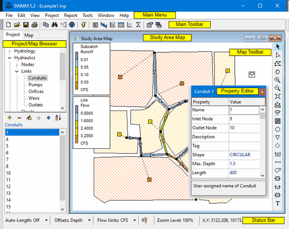
Main Menu
The Main Menu located across the top of the SWMM main window contains a collection of menus used for working with the program. These include:
File Menu
The File Menu contains commands for opening and saving data files and for printing:
| Command | Description |
|---|---|
| New | Creates a new SWMM project |
| Open | Opens an existing project |
| Reopen | Reopens a recently used project |
| Save | Saves the current project |
| Save As | Saves current project under a different name |
| Export | Exports the Study Area Map to a file; Exports current results to a Hot Start file; Exports the current result's Status/Summary reports |
| Combine | Combines two Routing Interface files together |
| Page Setup | Sets page margins and orientation for printing |
| Print Preview | Previews a printout of the current active view (map, report, graph, or table) |
| Prints the current view | |
| Exit | Exits SWMM |
Edit Menu
The Edit Menu contains commands for editing and copying.
| Command | Description |
|---|---|
| Copy To | Copies the currently active view (map, report, graph or table) to the clipboard or to a file |
| Select Object | Enables the user to select an object on the Study Area Map |
| Select Vertex | Enables the user to select a vertex of a subcatchment or link displayed on the Map |
| Select Region | Enables the user to delineate a region on the Map for selecting multiple objects |
| Select All | Selects all objects when the Map is the active window or all cells of a table when a tabular report is the active window |
| Find Object | Locates a specific object by name on the Map |
| Edit Object | Edits the properties of the currently selected object |
| Delete Object | Deletes the currently selected object |
| Group Edit | Edits a property for the group of objects that fall within the outlined region of the Map |
| Group Delete | Deletes a group of objects that fall within the outlined region of the Map |
View Menu
The View Menu contains commands for viewing the Study Area Map and the program's toolbars.
| Command | Description |
|---|---|
| Dimensions | Sets reference coordinates and distance units for the study area map |
| Backdrop | Allows a backdrop image to be added, positioned, and viewed behind the map |
| Pan | Pans across the map |
| Zoom In | Zooms in on the map |
| Zoom Out | Zooms out on the map |
| Full Extent | Redraws the map at full extent |
| Query | Highlights objects on the map that meet specific criteria |
| Overview | Toggles the display of the Overview Map |
| Layers | Toggles display of object layers on the Map |
| Legends | Controls display of the Map legends |
| Toolbars | Toggles display of the toolbar |
The mouse wheel can also be used to pan, zoom in or zoom out of the map at any time without having to select the Pan, Zoom In or Zoom Out commands.
Project Menu
The Project Menu includes commands related to the current project being analyzed.
| Command | Description |
|---|---|
| Summary | Lists the number of each type of object in the project |
| Details | Shows a detailed listing of all project data |
| Defaults | Edits a project's default properties |
| Calibration Data | Registers files containing calibration data with the project |
| Add a New Object | Adds a new object to the project |
| Run Simulation | Runs a simulation |
Report Menu
The Report Menu contains commands used to report analysis results in different formats.
| Command | Description |
|---|---|
| Status | Displays a status report for the most recent simulation run |
| Summary | Displays summary results in tabular form |
| Graph | Displays simulation results in graphical form |
| Table | Displays simulation results in tabular form |
| Statistics | Displays a statistical analysis of simulation results |
| Customize | Customizes the display of the currently active graph |
Tools Menu
The Tools Menu contains commands used to configure program preferences, Study Area Map display options, and external add-in tools.
| Command | Description |
|---|---|
| Program Preferences | Sets program preferences, such as font size, confirm deletions, number of decimal places displayed, etc. |
| Map Display Options | Sets appearance options for the Map, such as object size, object annotation, flow direction arrows, and back-ground color |
| Configure Tools | Adds, deletes, or modifies external add-in tools |
Window Menu
The Window Menu contains commands for arranging and selecting windows within the SWMM workspace.
| Command | Description |
|---|---|
| Cascade | Arranges windows in cascaded style, with the Study Area Map filling the entire display area |
| Tile | Minimizes the map and tiles the remaining windows vertically in the display area |
| Close All | Closes all open windows except for the map |
| Window List | Lists all open windows; the currently selected window has the focus and is denoted with a check mark |
Help Menu
The Help Menu contains commands for getting help in using EPA SWMM.
| Command | Description |
|---|---|
| User Guide | Displays the User Guide's Table of Contents |
| How do I | Displays a list of topics covering the most common operations |
| Keyboard Shortcuts | Displays a list of keyboard shortcuts for main menu commands |
| Measurement Units | Shows measurement units for all of SWMM's parameters |
| Error Messages | Lists the meaning of all error messages |
| Tutorials | Lists tutorials that show how to use EPA SWMM |
| Welcome Screen | Displays SWMM's Welcome screen |
| About | Displays information about the version of EPA SWMM being used |
Keyboard Shortcuts
Several main menu commands have keyboard shortcuts that can be used to to select them. They are listed below.
| Menu Command | Shortcut Key |
|---|---|
| File | New | Ctrl-N |
| File | Open | Ctrl-O |
| File | Save | Ctrl-S |
| File | Save As | Ctrl-Alt-S |
| File | Exit | Alt-F4 |
| Edit | Copy To | Ctrl-C |
| Edit | Select All | Ctrl-A |
| Edit | Find Object | Ctrl-F |
| Edit | Edit Object | F2 |
| Edit | Delete Object | Ctrl-Delete |
| Edit | Group Edit | Shift-F2 |
| View | Query | Ctrl-Q |
| Project | Add a New <object> | Ctrl-Insert |
| Project | Run Simulation | F9 |
| Report | Graph | Time Series Ctrl-G |
| Window | Cascade | Shift-F5 |
| Window | Tile | Shift-F4 |
| Window | Close All | Shift-Ctrl-F4 |
| Help | User Guide | Ctrl-F1 |
In addition the F1 key can be used to bring up context-sensitive Help in most of SWMM's data editing windows.
Main Toolbar
The Main Toolbar provides shortcuts to teh following Main Menu commands:
| Creates a new project |
| Opens and existing project |
| Saves the current project |
| Prints the currently active window |
| Copies the current selection to the clipboard of to a file |
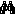 | Find a specific object on the Study Area Map |
| Makes a visual query of the Study Area Map |
| Toggles the display of the Overview Map |
| Runs a simulation |
| Displays a run's Status and Summary reports |
| Creates a profile plot of simulation results |
| Creates a time series plot of simulation results |
| Creates a time series table of simulation results |
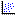 | Creates a scatter plot of simulation results |
| Performs a statistical analysis of simulation results |
| Modify display options for the currently active view |
| Arranges windows in cascaded style, with the Study Area Map filling the entire display area |

The toolbar can be made visible of invisible by selecting View >> Toolbar from the Main Menu.
Map Toolbar
The Map Toolbar contains buttons for selecting items and viewing the Study Area Map:
| Selects an object on the map |
| Selects link or subcatchment vertex points |
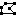 | Selects a region on the map |
| Pans across the map |
| Zooms in on the map |
| Zooms out on the map |
| Draws the map at full extent |
| Measures a length or area on the map |
The mouse wheel can also be used to pan, zoom in or zoom out of the map at any time without having to select the Pan, Zoom In or Zoom Out buttons.
The Map Toolbar also contains buttons used to add objects to a project via the Study Area Map:
| Adds a rain gage to the map |
| Adds a subcatchment to the map |
| Adds a junction node to the map |
| Adds an outfall node to the map |
| Adds a flow divider node to the map |
| Adds a storage unit node to the map |
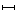 | Adds a conduit link to the map |
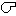 | Adds a pump link to the map |
| Adds an orifice link to the map |
| Adds a weir link to the map |
| Adds an outlet link to the map |
| Adds a text label to the map |


Status Bar
The Status Bar appears at the bottom of SWMM's Main Window and is divided into six sections:
Auto-Length
Indicates whether the automatic computation of conduit lengths and subcatchment areas is turned on or off. The setting can be changed by clicking the drop down arrow.
Indicates whether the positions of links above the invert of their connecting nodes are expressed as a Depth above the node invert or as the Elevation of the offset. Click the drop down arrow to change this option. If changed, a dialog box will appear asking if all existing offsets in the current project should be changed or not (i.e., convert Depth offsets to Elevation offsets or Elevation offsets to Depth offsets, depending on the option selected).
Flow Units
Displays the current flow units that are in effect. Click the drop down arrow to change the choice of flow units. Selecting a US flow unit means that all other quantities will be expressed in US units, while choosing a metric flow unit will force all quantities to be expressed in metric units. The units of previously entered data are not automatically adjusted if the unit system is changed.
Run Status
| results are not available because no simulation has been run yet |
| results are up to date |
| results are out of date because project data have changed. |
| results are not available because the last simulation had errors |

Zoom Level
Displays the current zoom level for the Study Area Map (100% is full scale).
XY Location
Displays the Study Area Map coordinates of the current position of the mouse pointer.
Study Area Map
The Study Area Map provides a planar schematic diagram of the objects comprising a drainage system. Its pertinent features are as follows:
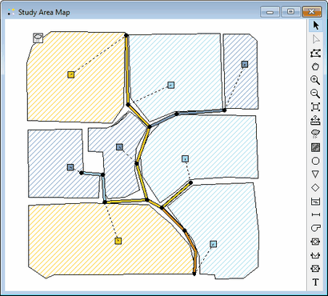
- The location of objects and the distances between them do not necessarily have to conform to their actual physical scale.
- Selected properties of these objects, such as water quality at nodes or flow velocity in links, can be displayed by using different colors. The color-coding is described in a Legend, which can be edited.
- New objects can be directly added to the Map and existing objects can be selected for editing, deleting, and repositioning.
- A backdrop drawing (such as a street or topographic map) can be placed behind the Map for reference.
- The Map can be zoomed to any scale and panned from one position to another.
- Nodes and links can be drawn at different sizes, flow direction arrows added, and object symbols, ID labels and numerical property values displayed.
- The Map can be printed, copied onto the Windows clipboard, or exported as a DXF file or Windows metafile.
See Also
Working with the Map
Project Browser
The Project Browser appears when the Project tab on the left panel of SWMM's Main Window is pressed. It provides access to all of the data in a project. The vertical sizes of the list boxes in the browser can be adjusted by using the splitter bar located just below the upper box. The width of the Browser panel can be adjusted by using the splitter bar located along its right edge
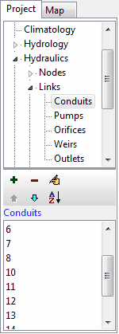 | The upper list box displays the various categories of data objects available to a SWMMproject. The lower list box lists the name of each individual object of the currently selected data category. |
| The buttons between the two list boxes are used as follows: [Add] adds a new object, [Delete] deletes the selected object, [edit] edits the selected object, [MoveUp] moves the selected object up one position, [MoveDown] moves the selected object down one position, [Sort] sorts the objects in ascending order. |
Selections made in the Project Browser are coordinated with objects highlighted on the Study Area Map, and vice versa. For example, selecting a conduit in the Browser will cause that conduit to be highlighted on the map, while selecting it on the map will cause it to become the selected object in the Browser.
Map Browser
The Map Browser appears when the Map tab on the left panel of the SWMM's Main Window is selected. . It controls the mapping themes and time periods viewed on the Study Area Map. The width of the Map Browser panel can be adjusted by using the splitter bar located along its right edge. The Map Browser consists of the following three panels that control what results are displayed on the map:
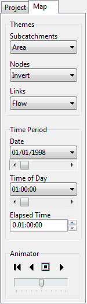 | The Themes panel selects a set of variables to view in color-codedfashion on the Map.The Time Period panel selects which time period of the simulation results are viewed on the Map. The Animator panel controls the animated display of the Study Area Map and all Profile Plots over time. |
Map Browser - Themes
The Themes panel of the Map Browser is used to select a thematic variable to view in color-coded fashion on the Study Area Map.
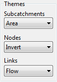 | Subcatchments – selects the theme to display for the subcatchment areas shown on the Map. Nodes – selects the theme to display for the drainage system nodes shown on the Map. Links – selects the theme to display for the drainage system links shown on the Map. |
Map Browser - Time Period
The Time Period panel of the Map Browser is used to select a time period in which to view computed results in thematic fashion on the Study Area Map.
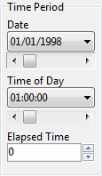 | Date – selects the day for which simulation results will be viewed. Time of Day – selects the hour of the current day for which simulation results will be viewed. Elapsed Time – selects the elapsed time from the start of the simulation for which results will be viewed. |
Map Browser - Animator
The Animator panel of the Map Browser contains controls for animating the Study Area Map and all Profile Plots through time i.e., updating map color-coding and hydraulic grade line profile depths as the simulation time clock is automatically moved forward or back. The meaning of the control buttons are as follows:
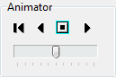 |  Returns to the starting period. Returns to the starting period. |
| Starts animating backwards in time. | |
| Stops the animation. | |
| Starts animating forwards in time. |
The slider bar is used to adjust the animation speed.
Property Editor
The Property Editor (shown below) is used to edit the properties of data objects that can appear on the Study Area Map. It is invoked when one of these objects is selected (either on the map or in the Project Browser and double-clicked or when the Project Browser's Edit button is clicked.
is clicked.
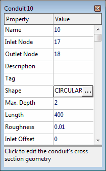
Key features of the Property Editor include:
- The Editor is a grid with two columns - one for the property's name and the other for its value.
- The columns can be re-sized by re-sizing the header at the top of the Editor with the mouse.
- A hint area is displayed at the bottom of the Editor with an expanded description of the property being edited. The size of this area can be adjusted by dragging the splitter bar located just above it.
- The Editor window can be moved and re-sized via the normal Windows operations.
- Depending on the property, the value field can be one of the following:
- a text box in which you enter a value
- a dropdown combo box from which you select a value from a list of choices
- a dropdown combo box in which you can enter a value or select from a list of choices
- an ellipsis button which you click to bring up a specialized editor
- The field in the Editor which currently has focus will have a focus rectangle drawn around it.
- Both the mouse and the Up and Down arrow keys on the keyboard can be used to move between fields.
- To begin editing the field with the focus, either begin typing a value or hit the Enter key.
- To have the program accept edits made in a property field, press the Enter key or move to another field. To cancel an edit, press the Esc key.
- The Property Editor can be hidden by clicking the button in the upper right corner of its title bar.
Setting Program Preferences
Program preferences allow one to customize certain program features. To set program preferences, select Program Preferences from the Tools menu. A Preferences dialog will appear containing two tabbed pages - one for General Preferences and one for Numerical Precision.
General Preferences
The following preferences can be set on the General Preferences page of the Preferences dialog:
| Blinking Map Highlighter | Check to make the selected object on the Study Area Map blink on and off. |
| Flyover Map Labeling | Check to display the ID name and current theme value in a hint-style box whenever the mouse is placed over an object on the Map. |
| Confirm Deletions | Check to display a confirmation dialog box before deleting any object. |
| Automatic Backup File | Check to save a backup copy of a newly opened project to disk named with a .bak extension. |
| Report Elapsed Time by Default | Check to use elapsed time (rather than date/time) as the default for time series graphs and tables. |
| Prompt to Save Results | If left unchecked then simulation results are automatically saved to disk when the current project is closed. Otherwise the user will be asked if results should be saved. |
| Show Welcome Screen | Check to have SWMM display a welcome screen when started. |
| Clear Recent Project List | Check to clear the list of most recently used files appearing when File >> Reopen is selected from the Main Menu. |
| Style Theme | Selects a color theme to use for SWMM's user interface (see below) |
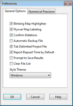 | 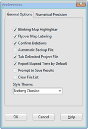 | 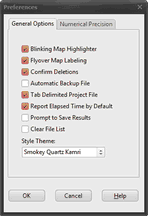 |
Numerical Precision
The Numerical Precision page of the Preferences dialog controls the number of decimal places displayed when simulation results are reported. Use the dropdown list boxes to select a specific Subcatchment, Node or Link variable, and then use the edit boxes next to them to select the number of decimal places to include when displaying computed results for the variable.
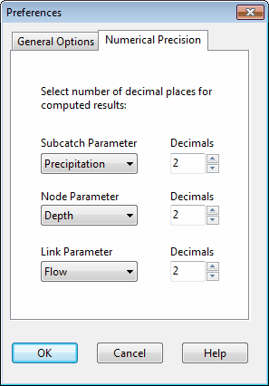
Note that the number of decimal places displayed for any particular input design parameter, such as slope, diameter, length, etc. is whatever the user enters.
Working with Projects
Project files contain all of the information used to model a study area. They are usually named with a **.INP** extension. This section describes how to create, open, and save SWMM projects and how to set their default properties.
- Creating a new project
- Opening an existing project
- Saving a project
- Setting project defaults
- Units of measurement
- Registering calibration data
- Viewing all project data
Creating a New Project
To create a new project:
- Select File >> New or click the button on the Main Toolbar.
- You will be prompted to save the existing project (if changes were made to it) before the new project is created.
- A new, unnamed project is created with all options set to their default values.
A new project is automatically created whenever SWMM first begins.
[!tip] If you are going to use a backdrop image with automatic area and length calculation, then it is recommended that you set the map dimensions immediately after creating the new project (see Setting the Map's Dimensions).
Opening an Existing Project
To open an existing project stored on disk:
- Either select File >> Open or click the
 button on the Main Toolbar.
button on the Main Toolbar. - You will be prompted to save the current project (if changes were made to it).
- Select the file to open from the Open File dialog that appears.
- Click Open to open the selected file.
To open a project that was worked on recently:
- Select File >> Reopen.
- Select a file from the list of recently used files to open.
Saving a Project
To save a project under its current name either select File >> Save or click the  button on the Main Toolbar.
button on the Main Toolbar.
To save a project using a different name, select File >> Save As. A standard Save File dialog will appear from which you can select the folder and name that the project should be saved under.
Setting Project Defaults
Each project has a set of default values that are used unless overridden by the SWMM user. These values fall into three categories:
- Default ID labels (labels used to identify nodes and links when they are first created)
- Default subcatchment properties (e.g., area, width, slope, etc.)
- Default node/link properties (e.g., node invert, conduit length, routing method).
To set default values for a project:
- Select Project >> Defaults.
- A Project Defaults dialog will appear with three pages, one for each category listed above.
- Check the box in the lower left of the dialog form if you want to save your choices for use in all new future projects as well.
- Click OK to accept your choice of defaults.
Units of Measurement
SWMM can use either US customary units or SI metric units. The choice of flow units determines what unit system is used for all other quantities:
- selecting CFS (cubic feet per second), GPM (gallons per minutes), or MGD (million gallons per day) for flow units implies that US units will be used throughout
US Customary Units
| Area (Subcatchment) | acres |
| Area (Storage Unit) | square feet |
| Area (Ponding) | square feet |
| Capillary Suction | inches |
| Concentration | milligrams / liter (mg/L) micrograms / liter (ug/L) counts / liter (#/L) |
| Decay Constant (Infiltration) | 1 / hours |
| Decay Constant (Pollutants) | 1 / days |
| Depression Storage | inches |
| Depth | feet |
| Diameter | feet |
| Discharge Coefficient Orifice Weir | dimensionless cubic feet / second / feetn (CFS/ftn) |
| Elevation | feet |
| Evaporation | inches / day |
| Flow | cubic feet / second (CFS) gallons / minute (GPM) million gallons / day (MGD) |
| Head | feet |
| Hydraulic Conductivity | inches / hour |
| Infiltration Rate | inches / hour |
| Length | feet |
| Manning's n | seconds / meter1/3 |
| Pollutant Buildup | mass / acre mass / length |
| Rainfall Intensity | inches / hour |
| Rainfall Volume | inches |
| Slope (Subcatchments) | percent |
| Slope (Cross Section) | rise / run |
| Street Cleaning Interval | days |
| Volume | cubic feet |
| Width | feet |
- selecting CMS (cubic meters per second), LPS (liters per second), or MLD (million liters per day) as flow units implies that SI units will be used throughout.
SI Units
| Area (Subcatchment) | hectares |
| Area (Storage Unit) | square meters |
| Area (Ponding) | square meters |
| Capillary Suction | millimeters |
| Concentration | milligrams / liter (mg/L) micrograms / liter (ug/L) counts / liter (#/L) |
| Decay Constant (Infiltration) | 1 / hours |
| Decay Constant (Pollutants) | 1 / days |
| Depression Storage | millimeters |
| Depth | meters |
| Diameter | meters |
| Discharge Coefficient Orifice Weir | dimensionless cubic meters / second / metersn (CFS/metern) |
| Elevation | meters |
| Evaporation | millimeters / day |
| Flow | cubic meters / second (CMS) liters / second (LPS) million liters / day (MLD) |
| Head | meters |
| Hydraulic Conductivity | millimeters / hour |
| Infiltration Rate | millimeters / hour |
| Length | meters |
| Manning's n | seconds / meter1/3 |
| Pollutant Buildup | mass / hectare mass / length |
| Rainfall Intensity | millimeters / hour |
| Rainfall Volume | millimeters |
| Slope (Subcatchments) | percent |
| Slope (Cross Section) | rise / run |
| Street Cleaning Interval | days |
| Volume | cubic meters |
| Width | meters |
- pollutant concentration and Manning's roughness coefficients (n) are always expressed in metric units.
Flow units can be selected directly on the main window's Status Bar or by setting a project's default values. In the latter case the selection can be saved so that all new future projects will automatically use those units.
[!caution] The units of previously entered data are not automatically adjusted if the unit syste is changed.
Link Offset Conventions
Conduits and flow regulators (orifices, weirs, and outlets) can be offset some distance above the invert of their connecting end nodes.
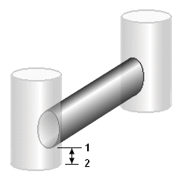
There are two different conventions available for specifying the location of these offsets. The Depth convention uses the offset distance from the node's invert (distance between 1 and 2 in the figure above). The Elevation convention uses the absolute elevation of the offset location (the elevation of point 1 in the figure).
The choice of convention can be made on the Status Bar of SWMM's main window of on the Node/Link Properties page of the Project Defaults dialog. When this convbention is changed, a dialog will appear giving one the option to automatically re-calculate all existing link offsets in the surrent project using the newly selected convention.
Registering Calibration Data
SWMM can compare the results of a simulation with measured field data in its Time Series Plots. Before SWMM can use such calibration data they must be entered into a specially formatted text file and be registered with the project.
To register calibration data residing in a Calibration File:
- Select Project >> Calibration Data.
- In the Calibration Data dialog that appears, click in the box next to the parameter (e.g., node depth, link flow, etc.) whose calibration data will be registered.
- Then click the Add button to select a Calibration File from a standard Windows file selection dialog box.
- Click the Edit button if you want to open the Calibration File in Windows NotePad for editing.
- Click the Delete button if you wish to remove the Calibration File from the form.
- Repeat steps 2 - 4 for any other parameters that have calibration data.
- Click OK to accept your selections.
Viewing All Project Data
A listing of all project data (with the exception of map coordinates) can be viewed in a non-editable window, formatted for input to SWMM's computational engine. This can be useful for checking data consistency and to make sure that no key components are missing. To view such a listing, select Project >> Details from the Main Menu. The format of the data in this listing is the same as that used when the file is saved to disk. It is described in detail in Appendix D of the SWMM 5 Users Manual.
Working with Objects
SWMM uses various types of objects to model a drainage area and its conveyance system. This section describes how these objects can be created, selected, edited, deleted, and repositioned.
- Types of objects
- Adding objects
- Selecting an object
- Moving an object
- Editing an object
- Converting an object
- Copying and pasting objects
- Deleting an object
- Shaping a link
- Shaping a subcatchment
- Selecting a group of objects
- Deleting a group of objects
- Editing a group of objects
Types of Objects
SWMM contains both physical objects that can appear on its Study Area Map, and non-physical objects that encompass design, loading, and operational information. These objects, which are listed in the Project Browser, consist of the following:
| Project Title/Notes | Nodes |
| Simulation Options | Links |
| Climatology | Transects |
| Rain Gages | Streets |
| Subcatchments | Inlets |
| Aquifers | Control Rules |
| Snow Packs | Curves |
| Unit Hydrographs | Time Series |
| LID Controls | Time Patterns |
| Pollutants | Map Labels |
| Land Uses |
Adding an Object
To add a new object to a project, select the type of object from the upper pane of the Project Browser and either select Project >> Add a New from the Main Menu or click the Browser's  button. If the object has a button on the Map Toolbar you can simply click the button instead.
button. If the object has a button on the Map Toolbar you can simply click the button instead.
If the object is a visual object that appears on the Study Area Map (a Rain Gage, Subcatchment, Node, Link, or Map Label) it will automatically receive a default ID name and a prompt will appear in the Status Bar telling you how to proceed. The steps used to draw each of these objects on the map are detailed below:
Rain Gages
Move the mouse to the desired location on the Map and left-click.
Subcatchments
Use the mouse to draw a polygon outline of the subcatchment on the Map:
- Left-click at each vertex
- Right-click or press <Enter> to close the polygon
- Press the <Esc> key if you wish to cancel the action.
Nodes (Junctions, Outfalls, Flow Dividers, and Storage Units)
Move the mouse to the desired location on the Study Area Map and left-click.
Links (Conduits, Pumps, Orifices, Weirs, and Outlets)
- Left-click the mouse on the link's inlet (upstream) node.
- Move the mouse (without pressing any button) in the direction of the link's outlet (downstream) node, clicking at all intermediate points necessary to define the link's alignment.
- Left-click the mouse a final time over the link's outlet (downstream) node. (Pressing the right mouse button or the <Esc> key while drawing a link will cancel the operation.)
Map Labels
- Left-click the mouse on the map location where the top left corner of the label should appear.
- Enter the text for the label.
- Press <Enter> to accept the label or <Esc> to cancel.
For all other non-visual types of objects, an object-specific dialog form will appear that allows you to name the object and edit its properties.
Selecting an Object
To select an object on the Study Area Map:
- Make sure that the map is in Selection mode (the mouse cursor has the shape of an arrow pointing up to the left). To switch to this mode, either click the Select Object button
 on the Map Toolbar or choose Edit >> Select Object from the Main Menu.
on the Map Toolbar or choose Edit >> Select Object from the Main Menu. - Click the mouse over the desired object on the map.
To select an object using the Project Browser:
- Select the object's category from the upper list in the Browser.
- Select the object from the lower list in the Browser.
Moving an Object
Rain gages, subcatchments, nodes and map labels can be moved to another location on the Study Area Map. To move an object to another location:
- Select the object on the map.
- With the left mouse button held down over the object, drag it to its new location.
- Release the mouse button.
The following alternative method can also be used:
- Select the object to be moved from the Project Browser (it must be either a rain gage, subcatchment, node, or map label).
- With the left mouse button held down, drag the item from the Items list box of the Project Browser to its new location on the map.
- Release the mouse button.
Note that the second method can be used to place objects on the map that were imported from a project file that had no coordinate information included in it.
Editing an Object {editing_object}
To edit an object appearing on the Study Area Map:
- Select the object on the map.
- If the Property Editor is not visible either:
- double click on the object
- or right click on the object and select Properties from the pop-up menu that appears
- or click in the Project Browser
- or select Edit >> Edit Object from the Main Menu.
- Edit the object's properties in the Property Editor.
To edit an object listed in the Project Browser:
- Select the object in the Project Browser.
- Either:
- click in the Project Browser,
- or select Edit >> Edit Object from the Main Menu,
- or double-click the item in the Objects list,
- or press the <Enter> key.
Depending on the class of object selected, a special property editor will appear in which the object's properties can be modified.
[!tip] The unit system in which object properties are expressed depends on the choice of units for flow rate. Using a flow rate expressed in cubic feet, gallons or acre-feet implies that US customary units will be used for all quantities. Using a flow rate expressed in liters or cubic meters means that SI metric units will be used. Flow units are selected either from the project's default Node/Link properties (see Setting Project Defaults) or directly from the main window's Status Bar.
Converting an Object
It is possible to convert a node or link from one type to another without having to first delete the object and add a new one in its place. An example would be converting a Junction node into an Outfall node, or converting an Orifice link into a Weir link.
To convert a node or link to another type:
- Right click the object on the Study Area Map.
- Select Convert To from the popup menu that appears.
- Select the new type of node or link to convert to from the sub-menu that appears.
- Edit the object to provide any data that was not included with the previous type of object.
Only properties that are common to both types of objects will be preserved after an object is converted to a different type. For nodes this includes its name, position, description, tag, external inflows, treatment functions, and invert elevation. For links it includes just its name, end nodes, description, and tag. Non-preserved properties are assigned their default values.
Copying and Pasting Objects
The properties of an object displayed on the Study Area Map can be copied and pasted into another object from the same category.
To copy the properties of an object to SWMM's internal clipboard:
- Right click the object on the Map.
- Select Copy from the pop-up menu that appears.
To paste copied properties into an object:
- Right click the object on the Map.
- Select Paste from the pop-up menu that appears.
Only data that can be shared between objects of the same type can be copied and pasted. Properties not copied include the object's name, coordinates, end nodes (for links), Tag property and any descriptive comment associated with the object. For Map Labels, only font properties are copied and pasted.
Deleting an Object
To delete an object:
- Select the object on the Study Area Map or from the Project Browser.
- Either click the
 button on the Project Browser, or press the <Delete> key on the keyboard, or select Edit >> Delete Object from the Main Menu, or right-click the object on the map and select Delete from the pop-up menu that appears.
button on the Project Browser, or press the <Delete> key on the keyboard, or select Edit >> Delete Object from the Main Menu, or right-click the object on the map and select Delete from the pop-up menu that appears.
[!tip] You can require that all deletions be confirmed before they take effect. See the General Preferences page of the Program Preferences dialog box.
Shaping a Link
Links can be drawn as polylines containing any number of straight-line segments that define the alignment or curvature of the link. Once a link has been drawn on the Study Area Map, interior points that define these line segments can be added, deleted, and moved.
To edit the interior points of a link:
- Select the link to edit on the map and put the map in Vertex Selection mode by either
- clicking the
 button on the Map Toolbar,
button on the Map Toolbar, - or selecting Edit >> Select Vertex from the Main Menu,
- or right-clicking on the link and selecting Vertices from the popup menu.
- The mouse pointer will change shape to an arrow tip, and any existing vertex points on the link will be displayed as small open squares. The currently selected vertex will be displayed as a filled square.To select a particular vertex, click the mouse over it.
- To add a new vertex to the link, right-click the mouse and select Add Vertex from the popup menu (or simply press the <Insert> key on the keyboard).
- To delete the currently selected vertex, right click the mouse and select Delete Vertex from the popup menu (or simply press the <Delete> key on the keyboard).
- To move a vertex to another location, drag it with the left mouse button held down to its new position.
While in Vertex Selection mode you can begin editing the vertices for another link by simply clicking on the link. To leave Vertex Selection mode, right click on the map and select Quit Editing from the popup menu, or simply select one of the other buttons on the Map Toolbar.
A link can also have its direction reversed (i.e., its end nodes switched) by right clicking on it and selecting Reverse from the pop-up menu that appears. Normally, links should be oriented so that the upstream end is at a higher elevation than the downstream end.
Shaping a Subcatchment
Subcatchments are drawn on the Study Area Map as closed polygons. To edit or add vertices to the polygon, follow the same procedures used for links (see Shaping a Link). If the subcatchment is originally drawn or is edited to have two or less vertices, then only its centroid symbol will be displayed on the Map.
Selecting a Group of Objects
A group of objects located within an irregular region of the Study Area Map can have a common property edited or be deleted all together. To select such a group of objects:
- Choose Edit >> Select Region from the Main Menu or click the button on the Map Toolbar.
- Draw a polygon around the region of interest on the map by clicking the left mouse button at each successive vertex of the polygon.
- Close the polygon by clicking the right button or by pressing the <Enter> key; cancel the selection by pressing the <Esc> key.
To select all objects in the project, whether in view or not, select Edit >> Select All from the Main Menu.
Deleting a Group of Objects
To delete the objects located within a selected area of the Study Area Map (see [Selecting a Group of Objects]()), select Edit >> Group Delete from the Main Menu. Then select the categories of objects you wish to delete from the dialog box that appears. As an option, you can specify that only objects with a specific Tag property should be deleted. Keep in mind that deleting a node will also delete any links connected to the node.
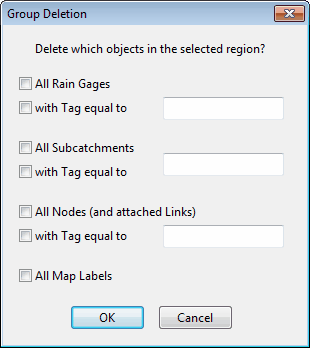
Editing a Group of Objects
Once a group of objects has been selected (see Selecting a Group of Objects), you can edit a common property shared among them:
- Select Edit >> Group Edit from the Main Menu.
- Use the Group Editor dialog that appears to select a property and specify its new value.
Working with the Map
EPA SWMM can display a map of the study area being modeled. This section describes how you can manipulate this map to enhance your visualization of the system.
- Selecting a map theme
- Setting the map's dimensions
- Utilizing a backdrop image
- Measuring distances
- Zooming the map
- Panning the map
- Viewing at full extent
- Finding an object
- Submitting a map query
- Using the map legends
- Using the Overview Map
- Setting map display options
- Exporting the map
Viewing Map Layers
The layers that can be viewed on the Study Area consist of rain gages, subcatchments, nodes, links, labels, and the backdrop image. The display of each of these can be toggled on or off by selecting View >> Layers from the Main Menu or by right-clicking on the map and selecting Layers from the pop-up menu that appears.
Selecting a Map Theme
A map theme corresponds to a specific layer property whose value is drawn in color-coded fashion on the Study Area Map. The dropdown list boxes on the Map Browser are used for selecting a theme to display for the subcatchment, node and link layers.
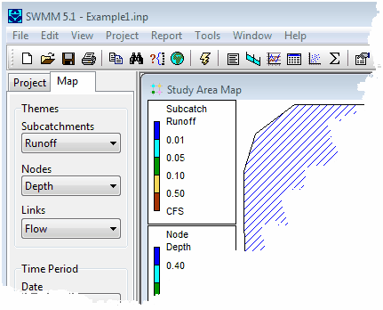
Methods for changing the color-coding associated with a theme are discussed in Using the Map Legends.
Setting the Map Dimensions
The physical dimensions of the map can be defined so that map coordinates can be properly scaled to the computer's video display.
To set the map's dimensions:
- Select View >> Dimensions from the Main Menu.
- Enter coordinates for the lower-left and upper-right corners of the map into the Map Dimensions dialog that appears or click the Auto-Size button to automatically set the dimensions based on the coordinates of the objects currently included in the map.
- Select the distance units to use for these coordinates.
- If the Auto-Length option is in effect, check the "Re-compute all lengths and areas" box if you would like SWMM to re-calculate all conduit lengths and subcatchment areas under the new set of map dimensions.
- Click the OK button to resize the map.
[!tip] If you are going to use a backdrop image with the automatic distance and area calculation feature, then it is recommended that you set the map dimensions immediately after creating a new project. Map distance units can be different from conduit length units. The latter (feet or meters) depend on whether flow rates are expressed in US or metric units. SWMM will automatically convert units if necessary.
[!tip] If you just want to re-compute conduit lengths and subcatchment areas without changing the map's dimensions, then just check the Re-compute Lengths and Areas box and leave the coordinate boxes as they are.
Utilizing a Backdrop Image
SWMM can display a Backdrop Image behind the Study Area Map. The backdrop image might be a street map, utility map, topographic map, site development plan, or any other relevant picture or drawing. For example, using a street map would simplify the process of adding sewer lines to the project since one could essentially digitize the drainage system's nodes and links directly on top of it.
Backdrop Image
The Backdrop Image must be a Windows metafile, bitmap, PNG, or JPEG image created outside of SWMM. Once imported, its features cannot be edited, although its scale and viewing area will change as the map window is zoomed and panned. For this reason metafiles work better than bitmaps or JPEGs since they will not loose resolution when re-scaled. Most CAD and GIS programs have the ability to save their drawings and maps as metafiles.
Selecting View >> Backdrop from the Main Menu will display a sub-menu with the following commands:
- Load (loads a backdrop image file into the project)
- Unload (unloads the backdrop image from the project)
- Align (aligns the drainage system schematic with the backdrop)
- Resize (resizes the map dimensions of the backdrop)
- Watermark (toggles the backdrop image appearance between normal and lightened)
The name of the backdrop file and its map dimensions are saved along with the rest of a project's data whenever the project is saved to file.
For best results in using a backdrop image:
- Use a metafile, not a bitmap.
- Dimension the Study Area Map so that its bounding rectangle has the same aspect ratio (width-to-height ratio) as the backdrop.
Loading a Backdrop Image
To load a backdrop image, select View >> Backdrop >> Load from the Main Menu. A Backdrop Image Selector dialog form will be displayed. The entries on this form are as follows:
Backdrop Image File
Enter the name of the file that contains the image. You can click the button to bring up a standard Windows file selection dialog from which you can search for the image file.
World Coordinates File
If a "world" file exists for the image, enter its name here, or click the button to search for it. A world file contains geo-referencing information for the image and can be created from the software that produced the image file or by using a text editor. It contains six lines with the following information:
Line 1: real world width of a pixel in the horizontal direction.
Line 2: X rotation parameter (not used).
Line 3: Y rotation parameter (not used).
Line 4: negative of the real world height of a pixel in the vertical direction.
Line 5: real world X coordinate of the upper left corner of the image.
Line 6: real world Y coordinate of the upper left corner of the image.
If no world file is specified, then the backdrop will be scaled to fit into the center of the map display window.
Scale Map to Backdrop Image
This option is only available when a world file has been specified. Selecting it forces the dimensions of the Study Area Map to coincide with those of the backdrop image. In addition, all existing objects on the map will have their coordinates adjusted so that they appear within the new map dimensions yet maintain their relative positions to one another. Selecting this option may then require that the backdrop be re-aligned so that its position relative to the drainage area objects is correct.
Aligning a Backdrop Image
To align a backdrop image with the drainage system schematic on the Study Area Map:
- Select View >> Backdrop >> Align from the Main Menu.
- Move the backdrop image across the Study Area Map by moving the mouse with the left button held down until it lines up properly with the drainage system. Then release the button.
Resizing a Backdrop Image
To resize a backdrop image select View >> Backdrop >> Resize from the Main Menu. A Backdrop Dimensions dialog will appear that allows you to specify X,Y coordinates for the lower left and upper right corners of the backdrop image. In addition, you can specify that the backdrop be resized to fit the current dimensions of the Study Area Map or that the map have its dimensions changed to match those of the backdrop. Note that with the latter option all objects currently on the map will have their coordinates changed so that their position relative to the lower left corner of the map is maintained.
Measuring Distances
To measure a distance or area on the Study Area Map:
- Click the
 button on the Map Toolbar.
button on the Map Toolbar. - Left-click on the map where you wish to begin measuring from.
- Move the mouse over the distance being measured, left-clicking at each intermediate location where the measured path changes direction.
- Right-click the mouse or press <Enter> to complete the measurement.
- The distance measured in project units (feet or meters) will be displayed in a dialog box. If the last point on the measured path coincides with the first point then the area of the enclosed polygon will also be displayed.
Zooming the Map
To Zoom In on the Study Area Map:
- Select View >> Zoom In from the Main Menu or click the
 button on the Map Toolbar.
button on the Map Toolbar. - To zoom in 100% (i.e., 2X), move the mouse to the center of the zoom area and click the left button.
- To perform a custom zoom, move the mouse to the upper left corner of the zoom area and with the left button pressed down, draw a rectangular outline around the zoom area. Then release the left button.
To Zoom Out on the Study Area Map:
- Select View >> Zoom Out from the Main Menu or click
 on the Map Toolbar.
on the Map Toolbar. - The map will be returned to the view in effect at the previous zoom level.
You can also zoom in and out by rotating the mouse's scroll wheel.
Panning the Map
To pan across the Study Area Map window:
- Select View >> Pan from the Main Menu or click the
 button on the Map Toolbar.
button on the Map Toolbar. - With the left button held down over any point on the map, drag the mouse in the direction you wish to pan in.
- Release the mouse button to complete the pan.
You can also pan by simply moving the mouse with its scroll wheel pressed down.
To pan using the Overview Map:
- If not already visible, bring up the Overview Map by selecting View >> Overview Map from the Main Menu or click the
 button on the Main Toolbar.
button on the Main Toolbar. - If the Study Area Map has been zoomed in, an outline of the current viewing area will appear on the Overview Map. Position the mouse within this outline on the Overview Map.
- With the left button held down, drag the outline to a new position.
- Release the mouse button and the Study Area Map will be panned to an area corresponding to the outline on the Overview Map.
Viewing at Full Extent
To view the Study Area Map at full extent, either:
a) select View >> Full Extent from the Main Menu, or
b) click the button on the Map Toolbar.
Finding an Object
To find an object on the Study Area Map whose name is known:
- Select View >> Find Object from the Main Menu or click the on the Main Toolbar.
- In the Map Finder dialog that appears, select the type of object to find and enter its name.
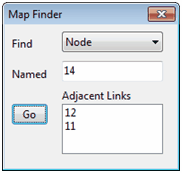
- Click the Go button.
If the object exists, it will be highlighted on the map and in the Project Browser. If the map is currently zoomed in and the object falls outside the current map boundaries, the map will be panned so that the object comes into view.
{kind=link}
[!tip] User-assigned object names in SWMM are not case sensitive. E.g., NODE123 is equivalent to Node123.
After an object is found, the Map Finder dialog will also list:
- the outlet connections for a subcatchment
- the connecting links for a node
- the connecting nodes for a link.
Submitting a Map Query
A Map Query identifies objects on the Study Area Map that meet a specific criterion (e.g., nodes that flood, links with velocity below 2 ft/sec, etc.). It can also identify which subcatchments have LID controls and which nodes have external inflows.To submit a map query:
- Select a time period in which to query the map from the Map Browser.
- Select View >> Query from the Main Menu or click the
 button on the Main Toolbar.
button on the Main Toolbar. - Fill in the following information in the Query dialog that appears:
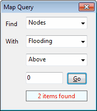
- Select whether to search for Subcatchments, Nodes, Links, LID Subcatchments, or Inflow Nodes.
- Select a parameter to query or the type of LID or inflow to locate.
- Select the appropriate operator: Above, Below, or Equals.
- Enter a value to compare against.
- Click the Go button. The number of objects that meet the criterion will be displayed in the Query dialog and each such object will be highlighted on the Study Area Map.
- As a new time period is selected in the Map Browser, the query results are automatically updated.
- You can submit another query using the dialog box or close it by clicking the button in the upper right corner.
After the Query dialog is closed the map will revert back to its original display.
Using the Map Legends
Map Legends associate a color with a range of values for the current theme being viewed. Separate legends exist for Subcatchments, Nodes, and Links. A Date/Time Legend is also available for displaying the date and clock time of the simulation period being viewed on the map.
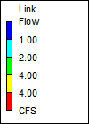
To display or hide a map legend:
- Select View >> Legends from the Main Menu or right click on the map and select Legends from the pop-up menu that appears.
- Click on the type of legend whose display should be toggled on or off.
A visible legend can also be hidden by double clicking on it.
To move a legend to another location press the left mouse button over the legend, drag the legend to its new location with the button held down, and then release the button.
To edit a legend, either select View >> Legends >> Modify from the Main Menu or right click on the legend if it is visible. Then use the Legend Editor dialog that appears to modify the legend's colors and intervals.
Using the Overview Map
The Overview Map, as pictured below, allows one to see where in terms of the overall system the main Study Area Map is currently focused. The current zoom area is depicted by the rectangular outline displayed on the Overview Map. As you drag this rectangle to another position the view within the main map will be redrawn accordingly. The Overview Map can be toggled on and off by selecting View >> Overview Map from the Main Menu or by clicking the on the Main Toolbar. The Overview Map window can also be dragged to any position as well as be re-sized.
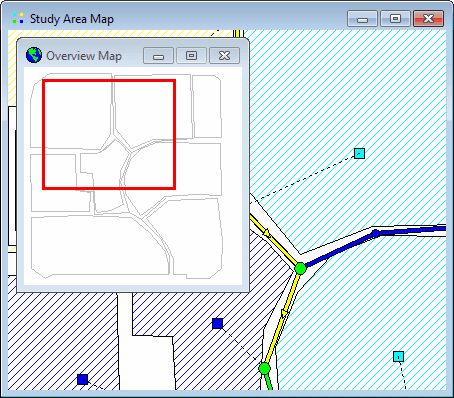
Setting Map Display Options
The Map Options dialog is used to change the appearance of the Study Area Map. There are several ways to invoke it:
- select Tools >> Map Display Options from the Main Menu or,
- click the Options button on the Main Toolbar when the Study Area Map window has the focus or,
- right click on any empty portion of the map and select Options from the popup menu that appears.
A Map Options dialog will appear where you can set various display options, such as subcatchment fill style, node and link size, flow direction arrows, and background color.
Exporting the Map
The full extent view of the study area map can be saved to file using either:
- Autodesk's DXF (Drawing Exchange Format) format,
- the Windows enhanced metafile (EMF) format,
- EPA SWMM's own ASCII text (.map) format.
The DXF format is readable by many Computer Aided Design (CAD) programs. Metafiles can be inserted into word processing documents and loaded into drawing programs for re-scaling and editing. Both formats are vector-based and will not lose resolution when they are displayed at different scales.
To export the map to a DXF, metafile, or text file:
- Select File >> Export >> Map from the Main Menu.
- In the Map Export dialog that appears select the format that you want the map saved in.
- If you select DXF format, you have a choice of how nodes will be represented in the DXF file. They can be drawn as filled circles, as open circles, or as filled squares. Not all DXF readers can recognize the format used in the DXF file to draw a filled circle. Also note that map annotation, such as node and link ID labels, will not be exported, but map label objects will be.
- After choosing a format, click OK and enter a name for the file in the Save As dialog that appears.
Running a Simulation
After a study area has been suitably described, its runoff, routing and water quality behavior can be simulated. This section describes how to specify options to be used in the analysis, how to run the simulation and how to troubleshoot common problems that may occur.
Setting Simulation Options
SWMM has a number of options that control how the simulation of a stormwater drainage system is carried out. To set these options:
- Select the Options category from the [Project Browser]().
- Select one of the following categories of options to edit:
- General Options
- Date Options
- Time Step Options
- Dynamic Wave Routing Options
- Interface File Options
- Reporting Options
- Event Options
- Click the button to invoke the appropriate editor for the chosen option category (the Simulation Options dialog is used for the first 5 categories while the Reporting Options dialog and the Events editor are used for the last two, respectively).
Starting a Simulation
To start a simulation run, either select Project >> Run Simulation from the Main Menu or click  on the Main Toolbar. A Run Status window will appear which displays the progress of the simulation.
on the Main Toolbar. A Run Status window will appear which displays the progress of the simulation.
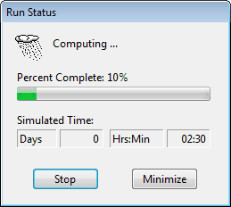
To stop a run before its normal termination, click the Stop button on the Run Status window or press the <Esc> key. Simulation results up until the time when the run was stopped will be available for viewing. To minimize the SWMM program while a simulation is running, click the Minimize button on the Run Status window.
If the analysis runs successfully the icon will appear in the Run Status section of the Status Bar at the bottom of SWMM's main window. Any error or warning messages will appear in a Status Report window. If you modify the project after a successful run has been made, the status flag changes to indicating that the current computed results no longer apply to the modified project.
Troubleshooting Results
When a run ends prematurely, the Run Status dialog will indicate that the run was unsuccessful and direct the user to the [Status Report]() for details. The Status Report will include an error statement, code, and description of the problem (e.g., ERROR 138: Node TG040 has initial depth greater than maximum depth).
Even if a run completes successfully, one should check to insure that the results are reasonable. The following are the most common reasons for a run to end prematurely or to contain questionable results:
- Unknown ID Errors
- File Errors
- Drainage System Layout Errors
- Excessive Continuity Errors
- Unstable Flow Routing Results
Unknown ID Errors
This message typically appears when an object references another object that was never defined. An example would be a subcatchment whose outlet was designated as N29, but no such subcatchment or node with that name exists. Similar situations can exist for incorrect references made to Curves, Time Series, Time Patterns, Aquifers, Snow Packs, Transects, Pollutants, and Land Uses.
File Errors
File errors can occur when:
- a file cannot be located on the user's computer
- a file being used has the wrong format
- a file to be written to cannot be opened because the user does not have write privileges for the directory (folder) where the file is to be stored.
Drainage System Layout Errors
A valid drainage system layout must obey the following conditions:
- An outfall node can have only one conduit link connected to it.
- A flow divider node must have exactly two outflow links.
- A node can have no more than one dummy link connected to it.
- Under Kinematic Wave routing, a junction node can only have one outflow link and a regulator link cannot be the outflow link of a non-storage node.
- Under Dynamic Wave routing there must be at least one outfall node in the network.
An error message will be generated if any of these conditions are violated.
Excessive Continuity Errors
When a run completes successfully, the mass continuity errors for runoff, flow routing, and pollutant routing will be displayed in the Run Status window. These errors represent the percent difference between initial storage + total inflow and final storage + total outflow for the entire drainage system. If they exceed some reasonable level, such as 10 percent, then the validity of the analysis results must be questioned. The most common reasons for an excessive continuity error are computational time steps that are too long or conduits that are too short.
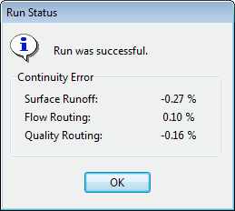
In addition to the system continuity error, the Status Report produced by a run will list those nodes of the drainage network that have the largest flow continuity errors. If the error for a node is excessive, then one should first consider if the node in question is of importance to the purpose of the simulation. If it is, then further study is warranted to determine how the error might be reduced.
Unstable Flow Routing Results
Due to the explicit nature of the numerical methods used for Dynamic Wave routing (and to a lesser extent, Kinematic Wave routing), the flows in some links or water depths at some nodes may fluctuate or oscillate significantly at certain periods of time as a result of numerical instabilities produced by the solution method. SWMM does not automatically identify when such conditions exist, so it is up to the user to verify the numerical stability of the model and to determine if the simulation results are valid for the modeling objectives. Time series plots at key locations in the network can help identify such situations as can a scatter plot between a link's flow and the corresponding water depth at its upstream node. (See Viewing Results with a Graph).
Numerical instabilities can occur over short durations and may not be apparent when time series are plotted with a long time interval. When detecting such instabilities, it is recommended that a reporting time step of 1 minute or less be used, at least for an initial screening of results.
The run's Status Report will list the links having the five highest values of a Flow Instability Index (FII). This index counts the number of times that the flow value in a link is higher (or lower) than the flow in both the previous and subsequent time periods. The index is normalized with respect to the expected number of such 'turns' that would occur for a purely random series of values and can range from 0 to 150. Flow time series plots for the links having the highest FII's should be inspected to insure that flow routing results are acceptably stable.
Numerical instabilities under Dynamic Wave flow routing can be reduced by:
- reducing the routing time step
- utilizing the variable time step option with a smaller time step factor
- selecting to ignore the inertial terms of the momentum equation
- selecting the option to lengthen short conduits.
Viewing Simulation Results
This section describes the different ways in which the results of a simulation can be viewed. These include a status report, a summary report, various map views, graphs, tables, and a statistical frequency report.
Viewing a summary report
Variables that can be viewed
Viewing a Status Report
A Status Report is available for viewing after each simulation. It contains information on the following:
- Analysis Options
- Input Summary (if requested in the Reporting Options)
- Rain File Summary
- Error Messages
- Control Actions (if requested in the Reporting Options)
- Continuity Errors
- Stability Results
- Time Step Variation
To view the Status Report select Report >> Status from the Main Menu or click the  button on the Main Toolbar and select Status Report from the drop-down menu that appears.
button on the Main Toolbar and select Status Report from the drop-down menu that appears.
To copy selected text from the Status Report to a file or to the Windows Clipboard, first select the text to copy with the mouse and then choose Edit >> Copy To from the Main Menu (or press the  button on the Main Toolbar).
button on the Main Toolbar).
To save both the entire Status Report and Summary Report to file, select File >> Export >> Status/Summary Report from the Main Menu.
Viewing Summary Results
SWMM's Summary Results report lists summary results for each subcatchment, node, and link in the project through a selectable list of tables. To view the various summary results tables, select Report >> Summary from the Main Menu or click the button on the Main Toolbar and select Summary Results from the drop-down menu that appears. The Summary Results window looks as follows:

The drop-down box at the upper left allows you to choose the type of results to view. The choices are:
- Subcatchment Runoff
- LID Performance
- Groundwater Summary
- Subcatchment Washoff
- Node Depths
- Node Inflows
- Node Surcharging
- Node Flooding
- Storage Volumes
- Outfall Loadings
- Street Flows
- Link Flows
- Flow Classification
- Conduit Surcharging
- Link Pollutant Loads
- Pumping Summary
[!tip] The summary results displayed in these tables are based on results found at every computational time step and not just on the results from each reporting time step.
Only summary categories relevant to the particular project and its results will be listed (e.g., Node Flooding and Pumping Summary will not appear if the run has no flooded nodes and the project has no pumps, respectively).
Clicking on the name of an object in the first column of the table will locate that object both in the Project Browser and on the Study Area Map. Clicking on a column heading will sort the entries in the table by the values in that column (alternating between ascending and descending order with each click.
Selecting Edit >> Copy To from the Main Menu or clicking on the Main Toolbar will allow you to copy the contents of the table to either the Windows Clipboard or to a file. To save both the entire Status Report and all tables of the Summary Report to a file, select File >> Export >> Status/Summary Report from the Main Menu.
Variables That Can be Viewed
Aside from the results presented in the Status and Summary Reports, computed results for individual subcatchments, nodes, and links can be viewed in several different formats. These variables include:
- Time series variables of values saved at every reporting time step.
- Statistical summary variables derived from the time series results (i.e., a subset of variables contained in the Summary Report).
Time Series Variables
Time series results for the following variables are available for viewing on the map and can be plotted, tabulated, and statistically analyzed:
| Subcatchment Variables | Link Variables |
|---|---|
| rainfall rate (in/hr or mm/hr) | flow rate (flow units) |
| snow depth (inches or millimeters) | average water depth (ft or m) |
| evaporation loss (in/day or mm/day) | flow velocity (ft/sec or m/sec) |
| infiltration loss (in/hr or mm/hr) | volume of water (ft3 or m3) |
| runoff flow (flow units) | capacity (fraction of full area filled by flow for conduits; control setting for pumps and regulators) |
| groundwater flow into the drainage network (flow units) | concentration of each pollutant (mass/liter) |
| groundwater elevation (ft or m) | |
| soil moisture in the unsaturated groundwater zone (volume fraction) | |
| washoff concentration of each pollutant (mass/liter) |
| Node Variables | System-Wide Variables |
|---|---|
| water depth (ft or m above the node invert elevation) | air temperature (degrees F or C) |
| hydraulic head (ft or m, absolute elevation per vertical datum) | potential evaporation (in/day or mm/day) |
| stored water volume (including ponded water, ft3 or m3) | actual evaporation (in/day or mm/day) |
| lateral inflow (runoff + all other external inflows, in flow units) | total rainfall (in/hr or mm/hr) |
| total inflow (lateral inflow + upstream conduit inflows, in flow units) | total snow depth (inches or millimeters) |
| surface flooding (excess overflow when the node is at full depth, in flow units) | average losses (in/hr or mm/hr) |
| concentration of each pollutant after any treatment (mass/liter) | total runoff (flow units) |
| total dry weather inflow (flow units) | |
| total groundwater inflow (flow units) | |
| total RDII inflow (flow units) | |
| total direct inflow (flow units) | |
| total external inflow (flow units) | |
| total external flooding (flow units) | |
| total outflow from outfalls (flow units) | |
| total nodal storage volume ( ft3 or m3) |
These variables can be viewed only for those subcatchments, nodes, and links that were selected to have detailed time series results saved for them. This normally includes all such objects in the project unless the Reporting option (under the Options category in the Project Browser) was used to select specific objects to report on. For nodes and links, results are normally point values computed (or interpolated) at the end of each reporting time step. They can also be the average of all values computed during a reporting time step if Report Average Results is selected as a Reporting option.
Summary Variables
The following summary variables can be viewed in color-coded fashion for each object on the Study Area Map:
- Subcatchment Variables
- total precipitation (inches or millimeters)
- total evaporation (inches or millimeters)
- total infiltration (inches or millimeters)
- total runoff (inches or millimeters)
- peak runoff (in/hr or mm/hr)
- runoff coefficient
- Node Variables
- maximum water depth (ft or m)
- maximum hydraulic head (ft or m)
- maximum lateral inflow (flow units)
- total lateral inflow (million gallons or million liters)
- maximum flooding rate (flow units)
- total flooded volume (million gallons or million liters)
- hours flooded
- Link Variables
- maximum flow rate (flow units)
- maximum velocity (ft/sec or m/sec)
- maximum degree full
- hours flowing full
- hours capacity limited
As with time series results, these summary variables can be viewed only for those subcatchments, nodes, and links that were selected to have detailed time series results saved for them.
Viewing Results on the Map
There are several ways to view the values of certain input parameters and simulation results directly on the Study Area Map:
- For the current settings on the Map Browser, the subcatchments, nodes and links of the map will be colored according to their respective Map Legends. The map's color coding will be updated as a new time period is selected in the Map Browser.
- When the Flyover Map Labeling program preference is selected, moving the mouse over any map object will display its ID name and the value of its current theme parameter in a hint-style box.
- ID names and parameter values can be displayed next to all subcatchments, nodes and/or links by selecting the appropriate options on the Annotation page of the Map Options dialog.
- Subcatchments, nodes or links meeting a specific criterion can be identified by submitting a Map Query.
- One can animate the display of results on the network map either forward or backward in time by using the controls on the Animator panel of the Map Browser.
- The map can be printed, copied to the Windows clipboard, or saved as a DXF file or Windows metafile.
Viewing Results with a Graph
Analysis results can be viewed using several different types of graphs. Graphs can be printed, copied to the Windows clipboard, or saved to a text file or to a Windows metafile. The following types of graphs can be created from available simulation results:
You can zoom in or out of any graph by holding down the <Shift> key while drawing a zoom rectangle with the mouse's left button held down. Drawing the rectangle from left to right zooms in, drawing from right to left zooms out. The plot can also be panned in any direction by moving the mouse across the plot with the left button held down.
An opened graph will normally be redrawn when a new simulation is run. To prevent the automatic updating of a graph once a new set of results is computed you can lock the current graph by clicking the icon in the upper left corner of the graph. To unlock the graph, click the icon again.
See Also
Time Series Plots
A Time Series Plot graphs the values over time of specific combinations of objects and variables. Up to six time series can be plotted on the same graph. When only a single time series is plotted, and that item has calibration data registered for the plotted variable, then the calibration data will be plotted along with the simulated results.
To create a Time Series Plot:
- Select Report >> Graph >> Time Series from the Main Menu or click the
 on the Main Toolbar.
on the Main Toolbar. - A Time Series Plot dialog will appear. Use it to describe what objects and variables should be plotted.
To customize the appearance of a time series plot:
- Make the plot the active window (click on its title bar).
- Select Report >> Customize from the Main Menu, or click the button on the Main Toolbar, or simply right-click on the graph.
- Use the Graph Options dialog that appears to customize the plot's appearance.
Profile Plots
A Profile Plot displays the variation in simulated water depth with distance over a connected path of drainage system links and nodes at a particular point in time. Once the plot has been created it will be automatically updated as a new time period is selected using the Map Browser.
To create a Profile Plot:
- Select Report >> Graph >> Profile from the Main Menu or press on the Main Toolbar.
- A Profile Plot dialog will appear. Use it to identify the path along which the profile plot is to be drawn.
To customize the appearance of a profile plot:
- Make the plot the active window (click on its title bar).
- Select Report >> Customize from the Main Menu, or click on the Main Toolbar, or simply right-click on the graph.
- Use the Profile Plot Options dialog that appears to customize the plot's appearance.
Profile plots can also be created before any simulation results are available, to help visualize and verify the vertical layout of a drainage system. Plots created in this manner will contain a refresh button in the upper left corner that can be used to redraw the plot after edits are made to any elevation data appearing in the plot.
Scatter Plots
A Scatter Plot displays the relationship between a pair of variables, such as flow rate in a pipe versus water depth at a node.
To create a Scatter Plot:
- Select Report >> Graph >> Scatter from the Main Menu or press on the Main Toolbar.
- Specify what time interval and what pair of objects and their variables to plot using the Scatter Plot dialog that appears.
To customize the appearance of a scatter plot:
- Make the plot the active window (click on its title bar).
- Select Report >> Customize from the Main Menu, or click on the Main Toolbar, or simply right-click on the graph.
- Use the Graph Options dialog that appears to customize the plot's appearance.
Viewing Results with a Table
Time series results for selected variables and objects can also be viewed in a tabular format. There are two types of formats available:
- Table by Object – tabulates the time series of several variables for a single object (e.g., flow and water depth for a conduit).
- Table by Variable – tabulates the time series of a single variable for several objects of the same type (e.g., runoff for a group of subcatchments).
To create a tabular report:
- Select Report >> Table from the Main Menu or click
 on the Main Toolbar.
on the Main Toolbar. - Choose the table format (either By Object or By Variable) from the sub-menu that appears.
- Fill in the Table by Object or Table by Variable dialogs to specify what information the table should contain.
Viewing a Statistics Report
A Statistics Report can be generated from the time series of simulation results. For a given object and variable this report will do the following:
- segregate the simulation period into a sequence of non-overlapping events, either by day, month, or by flow (or volume) above some minimum threshold value,
- compute a statistical value that characterizes each event, such as the mean, maximum, or total sum of the variable over the event's time period,
- compute summary statistics for the entire set of event values (mean, standard deviation and skewness),
- perform a frequency analysis on the set of event values.
The frequency analysis of event values will determine the frequency at which a particular event value has occurred and will also estimate a return period for each event value. Statistical analyses of this nature are most suitable for long-term continuous simulation runs.
To generate a Statistics Report:
- Select Report >> Statistics from the Main Menu or click the
 on the Main Toolbar.
on the Main Toolbar. - Fill in the Statistics Selection dialog that appears, specifying the object, variable, and event definition to be analyzed.
The Statistics Report consists of four tabbed pages that contain:
- a table of event summary statistics
- a table of rank-ordered event periods, including their date, duration, and magnitude
- a histogram plot of the chosen event statistic
- an exceedance frequency plot of the event values.
The exceedance frequencies included in the Statistics Report are computed with respect to the number of events that occur, not the total number of reporting periods.
Printing and Copying
This section describes how to print, copy to the Windows clipboard, or copy to file the contents of the currently active window in the SWMM workspace. This can include the Study Area Map, a graph, a table, or a report.
- Selecting a printer
- Setting the page format
- Previewing the page
- Printing the current view
- Copying the current view
Selecting a Printer
To select a printer from among your installed Windows printers and set its properties:
- Select File >> Page Setup from the Main Menu.
- Click the Printer button on the Page Setup dialog that appears.
- Select a printer from the choices available in the combo box in the Print Setup dialog that appears.
- Click the Properties button to select the appropriate printer properties (which vary with choice of printer).
- Click OK on each dialog to accept your selections.
Setting the Page Format
To format the printed page:
- Select File >> Page Setup from the Main Menu.
- Use the Margins page of the Page Setup dialog box that appears to:
- Select a printer.
- Select the paper orientation (Portrait or Landscape).
- Set left, right, top, and bottom margins.
- Use the Headers/Footers page of the dialog box to:
- Supply the text for a header that will appear on each page.
- Indicate whether the header should be printed or not and how its text should be aligned.
- Supply the text for a footer that will appear on each page.
- Indicate whether the footer should be printed or not and how its text should be aligned.
- Indicate whether pages should be numbered.
- Click OK to accept your choices.
Previewing the Page
To preview a printout, select File >> Print Preview from the Main Menu. A Preview form will appear which shows how each page being printed will appear. While in preview mode, the left mouse button will re-center and zoom in on the image and the right mouse button will re-center and zoom out.
Printing the Current View
To print the contents of the current window being viewed in the SWMM workspace, either select File >> Print from the Main Menu or click  on the Main Toolbar. The following views can be printed:
on the Main Toolbar. The following views can be printed:
- Study Area Map (at the current zoom level)
- Status Report
- Summary Report (for the current table being viewed)
- Graphs (Time Series, Profile, and Scatter plots)
- Tabular Reports
- Statistical Reports.
Copying the Current View
SWMM can copy the text and graphics of the current window being viewed to the Windows clipboard or to a file. Views that can be copied in this fashion include the Study Area Map, summary report tables, graphs, time series tables, and statistical reports.
To copy the current view to the clipboard or to file:
- If the current view is a time series table, select the cells of the table to copy by dragging the mouse over them or copy the entire table by selecting Edit >> Select All from the Main Menu.
- Select Edit >> Copy To from the Main Menu or click the button on the Main Toolbar.
- Select choices from the Copy dialog that appears and click the OK button.
- If copying to file, enter the name of the file in the Save As dialog that appears and click OK.
Files Used by SWMM
This section describes the various files that SWMM can utilize. They include:
- Project File
- Report and Output Files
- Rainfall Files
- Climate File
- Calibration Data Files
- Time Series Files
- Interface Files
The only file required to run SWMM is the project file; the others are optional.
Project File
A SWMM Project File is a plain text file that contains all of the data used to describe a study area and the options used to analyze it. The file is organized into sections, where each section generally corresponds to a particular category of object used by SWMM. The contents of the file can be viewed from within SWMM while it is open by selecting Project >> Details from the Main Menu. An existing project file can be opened by selecting File >> Open from the Main Menu and be saved by selecting File >> Save (or File >> Save As).
Normally a SWMM user would not edit the project file directly, since SWMM's graphical user interface can add, delete, or modify a project's data and control settings. However, for large projects where data currently reside in other electronic formats, such as CAD or GIS files, it may be more expeditious to extract data from these sources and save it to a formatted Project file before running SWMM. The format of the project file is described in detail in Appendix D of the SWMM 5.1 Users Manual.
After a project file is saved to disk, a settings file will automatically be saved with it. This file has the same name as the project file except that its extension is **.ini** (e.g., if the project file were named project1.inp then its settings file would have the name project1.ini). It contains various settings used by SWMM's graphical user interface, such as map display options, legend colors and intervals, object default values, and calibration file information. Users should not edit this file. A SWMM project will still load and run even if the settings file is missing.
Report and Output Files
The Report File is a plain text file created after every SWMM run that contains the contents of both the Status Report and all of the tables included in the Summary Results report. Refer to the two aforementioned topics to review its content.
The Output File is a binary file that contains the numerical results from a successful SWMM run. This file is used by SWMM's user interface to interactively create time series plots and tables, profile plots, and statistical analyses of a simulation's results.
Whenever a successfully run project is either saved or closed, the report and output files are saved with the same name as the project file, but with extensions of **.rpt** and **.out**. This will happen automatically if the program preference Prompt to Save Results is turned off. Otherwise you will be asked if the current results should be saved or not. If results are saved then the next time the project is opened, the results from these files will automatically be available for viewing.
Rainfall Files
SWMM's rain gage objects can utilize rainfall data stored in external Rainfall Files. The program currently recognizes the following formats for storing such data:
- Hourly and fifteen minute precipitation data from over 5,500 reporting stations retrieved using NOAA's National Centers for Environmental Information (NCEI) Climate Data Online service (space delimited format only).
- The older DS-3240 and related formats used for hourly precipitation by NCEI.
- The older DS-3260 and related formats used for fifteen minute precipitation by NCEI.
- HLY03 and HLY21 formats for hourly rainfall at Canadian stations, available from Environment Canada.
- FIF21 format for fifteen minute rainfall at Canadian stations, also available from Environment Canada.
- a standard user-prepared format where each line of the file contains the station ID, year, month, day, hour, minute, and non-zero precipitation reading, all separated by one or more spaces.
When requesting data from NCEI’s online service, be sure to specify the TEXT format option, make sure that the data flags are included, and, for 15-minute data, select the QPCP option and not the QGAG one.
An excerpt from the user-prepared format might look as follows:
STA01 2004 6 12 00 00 0.12 STA01 2004 6 12 01 00 0.04 STA01 2004 6 22 16 00 0.07
This format can also accept multiple stations within the same file.
When a rain gage is designated as receiving its rainfall data from a file, the user must supply the name of the file and the name of the recording station referenced in the file. For the standard user-prepared format, the rainfall type (e.g., intensity or volume), recording time interval, and depth units must also be supplied as rain gage properties. For the other file types these properties are defined by their respective file format and are automatically recognized by SWMM.
Climate Files
SWMM can use an external Climate File that contains daily air temperature, evaporation, and wind speed data. The program currently recognizes the following formats:
- Global Historical Climatology Network - Daily (GHCN-D) files (TEXT output format) available from NOAA's National Centers for Environmental Information (NCEI) Climate Data Online.
- Older NCEI DS3200 or DS3210 files.
- Canadian climate files available from Environment Canada.
- A user-prepared climate file where each line contains a recording station name, the year, month, day, maximum temperature, minimum temperature, and optionally, evaporation rate, and wind speed. If no data are available for any of these items on a given date, then an asterisk should be entered as its value.
When a climate file has days with missing values, SWMM will use the value from the most recent previous day with a recorded value.
[!tip] For a user-prepared climate file, the data must be in the same units as the project being analyzed. For US units, temperature is in degrees F, evaporation is in inches/day, and wind speed is in miles/hour. For metric units, temperature is in degrees C, evaporation is in mm/day, and wind speed is in km/hour.
Calibration Files
Calibration Files contain measurements of variables at one or more locations that can be compared with simulated values in Time Series Plots. Separate files can be used for each of the following:
- Subcatchment Runoff
- Subcatchment Groundwater Flow
- Subcatchment Groundwater Elevation
- Subcatchment Snow Pack Depth
- Subcatchment Pollutant Washoff
- Node Depth
- Node Lateral Inflow
- Node Flooding
- Node Water Quality
- Link Flow
- Link Velocity
- Link Depth
Calibration files are registered to a project by selecting Project >> Calibration Data from the Main Menu (see Registering Calibration Data).
The format of the file is as follows:
- The name of the first object with calibration data is entered on a single line.
- Subsequent lines contain the following recorded measurements for the object:
- measurement date (month/day/year, e.g., 6/21/2004) or number of whole days since the start of the simulation
- measurement time (hours:minutes) on the measurement date or relative to the number of elapsed days
- measurement value (for pollutants, a value is required for each pollutant).
- Follow the same sequence for any additional objects.
An excerpt from an example calibration file is shown below. It contains flow values for two conduits: 1030 and 1602.Note that a semicolon can be used to begin a comment. In this example, elapsed time rather than the actual measurement date was used.
;Flows for Selected Conduits ;Conduit Days Time Flow ;----------------------------- 1030 0 0:15 0 0 0:30 0 0 0:45 23.88 0 1:00 94.58 0 1:15 115.37 1602 0 0:15 5.76 0 0:30 38.51 0 1:00 67.93 0 1:15 68.01
Time Series Files
Time Series Files are external text files that contain data for SWMM's time series objects. Examples of time series data include rainfall, evaporation, inflows to nodes of the drainage system, and water stage at outfall boundary nodes. The file must be created and edited outside of SWMM, using a text editor or spreadsheet program. A time series file can be linked to a specific time series object using SWMM's Time Series Editor.
The format of a time series file consists of one time series value per line. Comment lines can be inserted anywhere in the file as long as they begin with a semicolon. Blank lines are also permitted. Time series values can either be in date / time / value format or in time / value format, where each entry is separated by one or more spaces or tab characters. For the date / time / value format, dates are entered as month/day/year (e.g., 7/21/2004) and times as 24-hour military time (e.g., 8:30 pm is 20:30). After the first date, additional dates need only be entered whenever a new day occurs. For the time / value format, time can either be decimal hours or military time since the start of a simulation (e.g., 2 days, 4 hours and 20 minutes can be entered as either 52.333 or 52:20). An example of a time series file is shown below:
;Rainfall Data for Gage G1
07/01/2003 00:00 0.00000
00:15 0.03200
00:30 0.04800
00:45 0.02400
01:00 0.0100
07/06/2003 14:30 0.05100
14:45 0.04800
15:00 0.03000
18:15 0.01000
18:30 0.00800
Interface Files
SWMM can use several different kinds of Interface Files that contain either externally imposed inputs (e.g., rainfall or inflow/infiltration hydrographs) or the results of previously run analyses (e.g., runoff or routing results). These files can help speed up simulations, simplify comparisons of different loading scenarios, and allow large study areas to be broken up into smaller areas that can be analyzed individually. The different types of interface files that are currently available include:
- Rainfall Interface File
- Runoff Interface File
- Hot Start File
- RDII Interface File
- Routing Interface Files
Consult the Setting Simulation Options topic for instructions on how to specify interface files for use as input and/or output in a simulation.
Rainfall and Runoff Files
The Rainfall and Runoff Interface files are binary files created internally by SWMM that can be saved and reused from one analysis to the next.
The rainfall interface file collates a series of separate rain gage files into a single rainfall data file. Normally a temporary file of this type is created for every SWMM analysis that uses external rainfall data files and is then deleted after the analysis is completed. However, if the same rainfall data are being used with many different analyses, requesting SWMM to save the rainfall interface file after the first run and then reusing this file in subsequent runs can save computation time.
[!tip] The rainfall interface file should not be confused with a rainfall data file. The latter is an external text file that provides rainfall time series data for a single rain gage. The former is a binary file created internally by SWMM that processes all of the rainfall data files used by a project.
The runoff interface file can be used to save the runoff results generated from a simulation run. If runoff is not affected in future runs, the user can request that SWMM use this interface file to supply runoff results without having to repeat the runoff calculations again.
Hot Start Files
Hot Start Files are binary files created by SWMM that contain the full hydrologic, hydraulic and water quality state of the study area at the end of a run. The file saved after a run can be used to define the initial conditions for a subsequent run, producing the same results as if one continuous run were made.
Hot start files can be used to avoid the initial numerical instabilities that sometimes occur under Dynamic Wave routing. For this purpose they are typically generated by imposing a constant set of base flows (for a natural channel network) or set of dry weather sanitary flows (for a sewer network) over some startup period of time. The resulting hot start file from this run is then used to initialize a subsequent run where the inflows of real interest are imposed.
It is also possible to both use and save a hot start file in a single run, starting off the run with one file and saving the ending results to another. The resulting file can then serve as the initial conditions for a subsequent run if need be. This technique can be used to divide up extremely long continuous simulations into more manageable pieces.
Instructions to save and/or use a hot start file can be issued when editing the Interface Files options available in the Project Browser. One can also save the results of the current run to an abridged hot start file by selecting File >> Export >> Hot Start File from the Main Menu (not all state variables are available to be saved after a run has been made).
RDII Files
The RDII Interface File contains a time series of rainfall-dependent infiltration/inflow flows for a specified set of drainage system nodes. This file can be generated from a previous SWMM run when Unit Hydrographs and nodal RDII inflow data have been defined for the project, or it can be created outside of SWMM using some other source of RDII data (e.g., through measurements or output from a different computer program). RDII files generated by SWMM are saved in a binary format. RDII files created outside of SWMM are text files with the same format used for a Routing Interface File, where Flow is the only variable contained in the file.
Routing Files
A Routing Interface File stores a time series of flows and pollutant concentrations that are discharged from the outfall nodes of drainage system model. This file can serve as the source of inflow to another drainage system model that is connected at the outfalls of the first model. A Combine utility is available on the File menu that will combine pairs of routing interface files into a single interface file. This allows very large systems to be broken into smaller sub-systems that can be analyzed separately and linked together through the routing interface file. The figure below illustrates this concept.
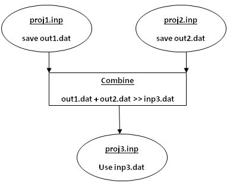
A single SWMM run can utilize an outflows routing file to save results generated at a system's outfalls, an inflows routing file to supply hydrograph and pollutograph inflows at selected nodes, or both.
RDII / Routing File Format
RDII Interface files and Routing Interface files have the same text format:
- the first line contains the keyword "SWMM5" (without the quotes)
- a line of text that describes the file (can be blank)
- the time step used for all inflow records (integer seconds)
- the number of variables stored in the file, where the first variable must always be flow rate
- the name and units of each variable (one per line), where flow rate is the first variable listed and is always named FLOW
- the number of nodes with recorded inflow data
- the name of each node (one per line)
- a line of text that provides column headings for the data to follow (can be blank)
for each node at each time step, a line with:
a) the name of the node,
b) the date (year, month, and day separated by spaces),
c) the time of day (hours, minutes, and seconds separated by spaces),
d) the flow rate followed by the concentration of each quality constituent.
Time periods with no values at any node can be skipped. An excerpt from an RDII / Routing interface file is shown below.
SWMM5 Example File 300 1 FLOW CFS 2 N1 N2 Node Year Mon Day Hr Min Sec Flow N1 2002 04 01 00 20 00 0.000000 N2 2002 04 01 00 20 00 0.002549 N1 2002 04 01 00 25 00 0.000000 N2 2002 04 01 00 25 00 0.002549
Using Add-In Tools
SWMM 5 has the ability to launch external applications from its graphical user interface that can extend its capabilities. This section describes how such tools can be registered and share data with SWMM 5.
What are Add-In Tools
Add-in tools are third party applications that users can add to the Tools menu of SWMM's Main Menu and be launched while SWMM is still running. SWMM can interact with these applications to a limited degree by exchanging data through its pre-defined files or through the Windows clipboard. Add-in tools can provide additional modeling capabilities to what SWMM already offers. Some examples of useful add-ins might include:
- a tool that performs a statistical analysis of long-term rainfall data prior to adding it to a SWMM rain gage,
- an external spreadsheet program that would facilitate the editing of a SWMM data set,
- a unit hydrograph estimator program that would derive the R-T-K parameters for a set of RDII unit hydrographs which could then be copied and pasted directly into SWMM's Unit Hydrograph Editor,
- a post-processor program that uses SWMM's hydraulic results to compute suspended solids removal through a storage unit,
- a third-party dynamic flow routing program used as a substitute for SWMM's own internal procedure.
The figure below shows what the Tools menu might look like after several add-in tools have been registered with it. The Configure Tools option is used to add, delete, or modify add-in tools. The options below this are the individual tools that have been made available (by this particular user) and can be launched by selecting them from the menu.
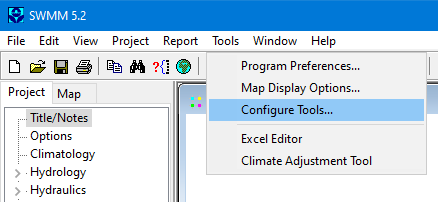
Configuring Add-In Tools
To configure one's personal collection of add-in tools, select Configure Tools from the Tools menu. This will bring up the Tool Options dialog as shown below. The dialog lists the currently available tools and has command buttons for adding a new tool and for deleting or editing an existing tool. The up and down arrow buttons are used to change the order in which the registered tools are listed on the Tools menu.
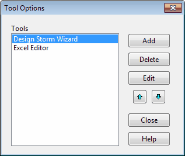
Whenever the Add or Edit button is clicked on this dialog a Tool Properties dialog will appear which is used to describe the properties of the new tool being added or the existing tool being edited.